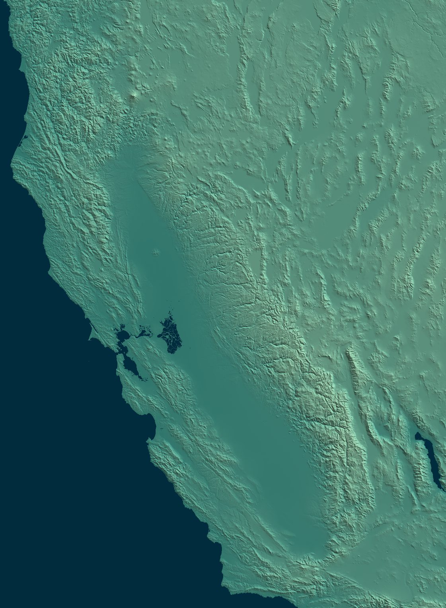
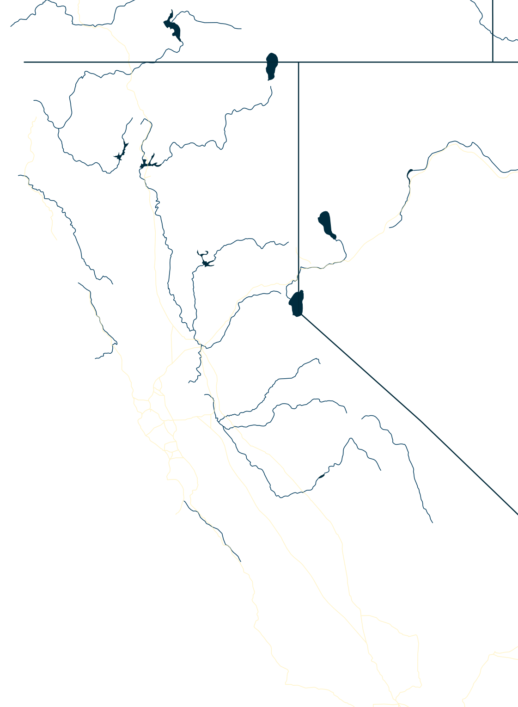
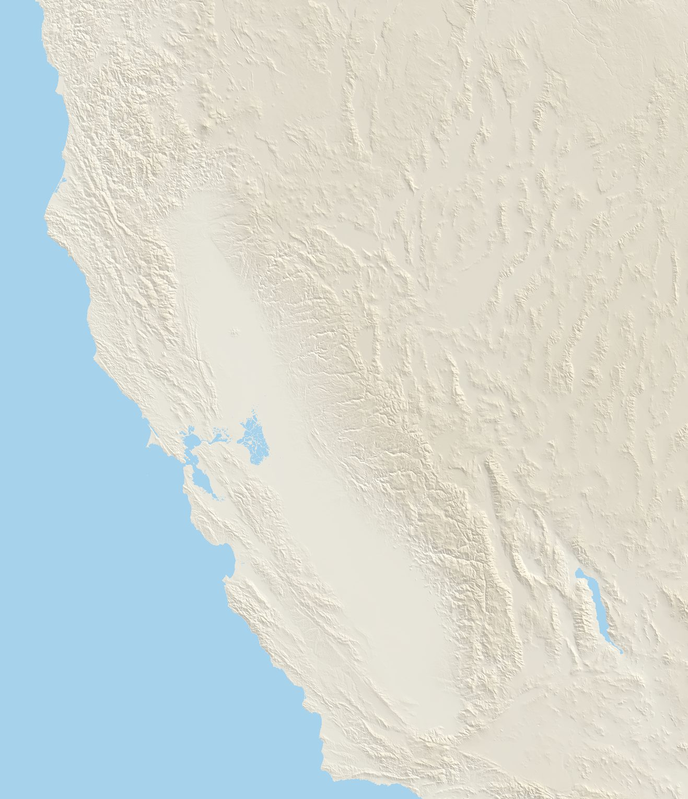
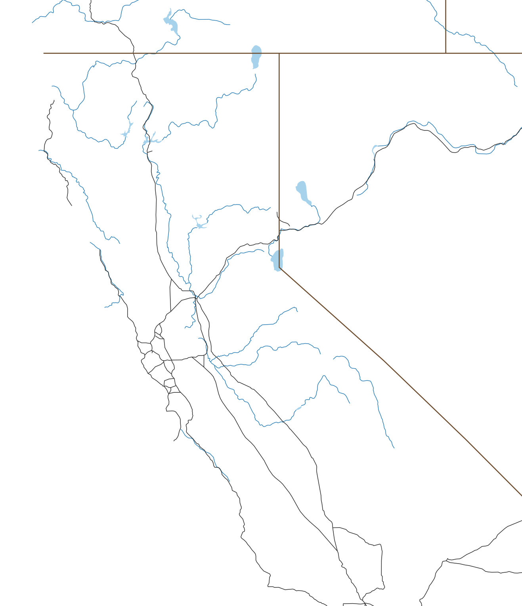

Hicks Mountain W6/NC-362
Summit
- Summit
- W6/NC-362 · Peakbagger
- Points
- 1
- First activation
- AJ6X, 25 September 2026
- Elevation
- 1,532′ (467 m)
- Prominence
- 985′ (300 m)
- Isolation
- 5.0 mi (8.1 km)
- Region
- Northern Coastal Ranges
- County
- Marin, California
- Grid
- CM88pd
- Land
- Private
- Wilderness
- None
- POTA park
- None
Route and radio
- Trailhead
- Hicks Mountain Belvedere Ranch, 450′ (137 m)
- Access
- Paved road
- Red tape
- Private ranch, only on MALT hikes; free, $30 donation suggested
- Round trip
- 4.6 mi (7.4 km), 3 h
- Elevation gain
- 1,400′ (427 m)
- Transport
- Hiking, Class 1
- Cell service
- Top: Verizon good; T-Mobile fair · way up: from 900′
- Towers, power lines
- tower 1.3 km NE; power line 953 m W
RF nearby: 929 licensed stations within 30 km
What to bring, the cheapest radio that still works here, on the AJ6X RF scale: HF: rung 1 of 4, uSDX or QMX, about $150: anything works. VHF: rung 1 of 4, Baofeng, about $25: anything works.
| Station | Service | Frequency | ERP | Where | Terrain | dBµV/m |
|---|---|---|---|---|---|---|
| KNKA274 | cellular | 824–890 MHz | 141 W | 1.3 km NE | in sight | 96 |
| KDG801 | public safety | 46.12–46.5 MHz | 240 W | 1.9 km NE | in sight | 95 |
| KCBS | AM radio | 740 kHz | 50 kW | 17.2 km E | −8 dB | 94 |
| WNGM656 | business radio | 462.8 MHz | 2.8 kW | 13.2 km SE | in sight | 89 |
| WPPV514 | public safety | 489.913 MHz | 1 kW | 11.7 km E | in sight | 86 |
| WIM379 | public safety | 490.938 MHz | 1 kW | 11.7 km E | in sight | 86 |
| KNKJ371 | paging | 931.163 MHz | 1.09 kW | 13.2 km SE | in sight | 85 |
| WPPV514 | public safety | 489.913 MHz | 1 kW | 13.2 km SE | in sight | 84 |
| WIM336 | public safety | 484.137 MHz | 1 kW | 13.2 km SE | in sight | 84 |
| WIM379 | public safety | 490.938 MHz | 1 kW | 13.2 km SE | in sight | 84 |
| WIM383 | business radio | 490.738 MHz | 1 kW | 13.2 km SE | in sight | 84 |
| WQDH206 | business radio | 483.438 MHz | 1 kW | 13.2 km SE | in sight | 84 |
Field strength at the summit from each station's power and distance, less an estimate of the terrain in between. A rough guide, by a rung either way: antenna patterns aren't known, and the noise from a site's equipment is in no licence. Data: FCC licences (2026-10-24), NOAA Weather Radio, OpenStreetMap.
Further down: Map · Aerial photo · QSO map · Summit to summit · Log
Hicks Mountain sits above Hicks Valley in West Marin, between Nicasio and Petaluma. It’s all private ranch land: grassy ridges, oak and bay woods lower down, and great views from the top. That’s why nobody had ever activated it, even though it’s been a SOTA summit since 2012.
About a year ago, my friend Tony KM6AM told me about the hikes of the Marin Agricultural Land Trust (MALT), which were opening up private Marin summits that had never been open to the public. That’s how I activated nearby Black Mountain earlier this year. Just days before MALT’s Hicks Mountain hike, I noticed it was a SOTA summit too. Saturday was already full, but I got a spot on Friday. Tough luck for the kids (KO6MFO and KO6MFP), who usually come along and would have loved this one! Instead they had to stay in school. Hopefully next time.
The ranch
The ranch is 344 acres on the steep east side of the mountain, next to the Marin French Cheese Company. The Corda family has been farming here for over 100 years, and today the Dellingers, part of the same family, run it. They’re best known for Hicks Mountain Hens, pasture-raised eggs that started as Bill Dellinger’s 4-H project when he was a kid, sold at an honor-system farm stand by the road. There are also goats for brush grazing, plus beef and honey. The land itself has redwoods, thick chaparral, and lots of little microclimates, each with its own plants and wildlife.
In 2024 MALT put an agricultural conservation easement on the ranch ($800,000: half from a Marin County Measure A grant, half from MALT donors), so it stays a working ranch and can never be subdivided or developed. It adjoins 14,226 acres of MALT-protected land, together one of the largest protected areas in the Bay Area. And according to MALT, the summit is the highest privately owned peak in Marin County. (MALT: Hicks Mountain Belvedere Ranch)
A few words about MALT. It was founded in 1980 by Ellen Straus and Phyllis Faber, together with ranchers, environmentalists and community leaders, to protect Marin’s farms from development. It was the first farmland trust in the country! The idea is simple: MALT pays ranchers for a conservation easement, the family keeps the land and keeps farming, and the land can never be developed. So far that’s 59,028 acres and 99 farms, and other places have copied the idea. Since the land stays private, MALT’s hikes and events are the only way most of us get to see it, and they’re well worth a donation. (MALT: Mission & History)
Getting there
The ranch is open only for MALT events, as far as I know. My hike was on Friday, 25 September 2026, from 10 AM to 2 PM, with two options: a harder loop, about 4.5 miles and 1,000′ of climbing on trails and ranch roads, all the way to the top; or an easy walk, about ⅔ mile each way on a ranch road, to a shaded picnic area. You sign up on MALT’s events page (they fill up fast, then there’s a waitlist) and sign the liability waiver ahead of time. It’s free, with a suggested $30 donation. For the loop, MALT recommends hiking poles and shoes with good grip.
- When: whenever MALT holds the hike, hopefully again soon. If there’s a choice, go in a cooler season, since there’s little shade on the way up.
- Water: none available on the trail.
- Time: everyone has to be off the property by 2 PM, which doesn’t leave much time on top.
- Sun: the lower part of the hike has some tree cover, but once it gets steep it’s mostly exposed. On a warm day, slow down so you don’t overheat.
- Fog and wind: on other days it’s the opposite. The summit is about 1,500′, right where the marine layer often sits, and the wind sweeps across the high ridge. Bring a layer.
- Dogs and smoking: no dogs other than service animals, and no smoking: these are working ranches. (MALT’s event policies)
- Toilets: porta-potties at the start, nothing on the trail.
- Ticks: I haven’t seen any, but there may be some. Stick to the road and trail, and stay out of the grass.
- Radio: it’s someone’s ranch, and a busy hike. I didn’t ask for permission in advance, hoping that explaining it in person would work better than an email. On the way up I talked to the guides: what I was about to do, why, and how many radio operators would be thrilled to make their first ever contact with this newly opened summit.
Trailhead
The ranch entrance is on Point Reyes–Petaluma Road, by the farm stand, at about 450′. Parking is very limited, so MALT asks everyone to carpool.
After dropping off the kids at school, I had a long and slow drive through Bay Area traffic and arrived 10 minutes late. Everything was well organized: people in safety vests directing traffic, and parking in the field by the entrance. Then I joined the briefing and checked in. We were reminded there is no water on the way up, and that we needed to be off the property by 2 PM.
The way up
My GPS says 2.4 miles and 1,190′ to the top, and 1,400′ of climbing for the whole loop, a bit more than MALT’s number.
The first part of the trail is just above the public road; then it turns right and starts climbing steeply. Lots of people, soon spread out by pace, with several guides leading or walking along. It was a warm, sunny day with no wind: some tree cover lower down, then mostly exposed once the trail got steep, so I slowed down to keep from overheating.


Summit
The summit is a rounded, grassy knoll, with views in every direction when the fog stays away. It was very busy – not a good place to raise an antenna – so I went back down to the edge of the activation zone and set up by the side of the trail.

While I was setting up the antenna, someone came over asking nicely what I was doing, and if I was planning to take off paragliding from the mountain. She was relieved to hear I was only going on the air, and not in the air. It turned out she was the property owner!


Activation
25 September 2026 First activation
- Radio
- Elecraft KX2
- Antenna
- 40m EFHW
- Antenna support
- Carbon fiber mast, guyed with 3 ground spikes
- Power
- 5 W
- Activator
- AJ6X
- QSOs
- 6
- Bands
- 40m (6)
- Modes
- CW (6)
- On air
- 18:52–18:59 UTC
First activation of Hicks Mountain, and a race against the clock! Time was running short: 4 hours total, minus check-in and briefing, and the guides were planning to start down again soon to get everyone off the property by 2 PM. So setup, activation and teardown had to fit in 20 minutes flat, with no time to try anything but 40m CW. A quick Slack message about the first activation, a spot, and off I went, with only 7 minutes left for the activation itself. Got the 6 contacts (18:52 to 18:59 UTC), and had everything packed up just as the guide sweeping the rear arrived.
A reminder: on a guided hike, the time on top can be very short. Have everything ready to set up in a few minutes, and plan on one band and one mode.
And back
The way down starts the same way, then lower down the loop splits onto a different trail: shorter, steeper and a bit more shaded. If you walk the whole loop, this is the better order: the long, gentle way up, and the steep part on the way down.

On the way down I had a nice talk with the guide sweeping the rear, and then with a gentleman retired from IT who now enjoys hiking. I also had a long chat with the owner, Angela, about amateur radio, Summits On The Air, and my kids, who would have loved this hike. At some point someone mentioned that trespassers occasionally go up the mountain. I made sure to say that this is against the SOTA rules, and that activators were really excited to finally have a legal way up!
I was surprised to be the only radio operator on the Friday hike, and guessed that another SOTA activator would go up on Saturday. I guessed right: Mark KC8YEK activated it the next day!
All of us got a goodbye present from Hicks Mountain Hens: half a dozen eggs from the ranch! Bill Dellinger and Shelby Ronsheimer keep almost 1,000 hens on pasture, in a mobile coop they move to a new paddock every few weeks. Their farm stand by the road, next to Marin French Cheese, runs on the honor system and sells eggs, honey and butter, and you can see the hens from there. Worth a stop on the way to Point Reyes, hike or no hike.
Back at the car at 1:24 PM, then the long drive back through Bay Area traffic.
Map


Cell service, 4G, from the carriers' maps: good fair weak
Aerial photo


QSO map


Azimuthal equidistant, power 0.5 distance scale, out to 1,201 km, centred on the summit: every QSO is a straight line, true in direction. Chasers at their location on QRZ, to about 5 km; summit-to-summit contacts at the other summit. Rings: what the skimmers of the Reverse Beacon Network heard of our calls during the activations, each skimmer at the centre of its grid square (1 farther than the map reaches). Earth: NASA Blue Marble.
Summit to summit on 2 m
1,373 activated summits in reach of Hicks Mountain on 2 m at 5 W, most activated first.
- Two rubber duckies, FM: 180. Mount Davidson W6/NC-423, Vollmer Peak W6/NC-298, Mount Diablo W6/CC-045, San Bruno Mountain W6/CC-072
- Two half-waves, FM: 146. Big Hill W6/NS-290, Coyote Peak W6/NC-399, Mount Bielawski W6/SC-155, Grouse Ridge W6/NS-195
- Yagis help, CW: 564. Donner Ridge W6/NS-181, Lookout Mountain W6/ND-037, Leviathan Peak W6/SN-039, Dry Creek Knoll W6/ND-392
- Long shots with two yagis, CW, half of the time: 221. Mount Pinos W6/CC-002, Cerro Noroeste W6/SC-001, Frazier Mountain W6/CC-003, San Emigdio Mountain W6/SC-002
- Very long shots with two yagis, CW, a tenth of the time: 262. Tahoe Mountain W6/NS-397, Mount Ashland W7O/CS-019, McDonald Peak W7O/CS-030, Rattlesnake Mountain W7N/WC-111




▲ Hicks Mountain
- Two rubber duckies, FM: 180. Mount Davidson W6/NC-423, Vollmer Peak W6/NC-298, Mount Diablo W6/CC-045, San Bruno Mountain W6/CC-072
- Two half-waves, FM: 146. Big Hill W6/NS-290, Coyote Peak W6/NC-399, Mount Bielawski W6/SC-155, Grouse Ridge W6/NS-195
- Yagis help, CW: 564. Donner Ridge W6/NS-181, Lookout Mountain W6/ND-037, Leviathan Peak W6/SN-039, Dry Creek Knoll W6/ND-392
- Long shots with two yagis, CW, half of the time: 221. Mount Pinos W6/CC-002, Cerro Noroeste W6/SC-001, Frazier Mountain W6/CC-003, San Emigdio Mountain W6/SC-002
- Very long shots with two yagis, CW, a tenth of the time: 262. Tahoe Mountain W6/NS-397, Mount Ashland W7O/CS-019, McDonald Peak W7O/CS-030, Rattlesnake Mountain W7N/WC-111
Calculated, not measured, with NTIA's Irregular Terrain Model (ITM, Longley-Rice) point to point over each path's profile: 146 MHz, continental temperate climate, average ground. 5 W, antennas 6.5′ (2 m) up and aimed, RFI left out. A rough guide. Each group is the easiest setup that works 90% of the time. FM needs −119.5 dBm at the receiver (12 dB SINAD), with rubber duckies at about −5.4 dBi each (−3 to −8), upright in the hand and facing the other summit, and half-waves at 2.15; both must still work under a 65′ (20 m) canopy along the path, clear of the tops. Yagis: CW at 0 dB over noise in 500 Hz. Long shots work half of the time, very long shots a tenth, with two yagis. Terrain from USGS 3DEP at 30 m, summits from the SOTA list, rivers, freeways and state lines from Natural Earth.
The path to 20 of them
The ground as a radio sees it, the earth's curve included, from Hicks Mountain on the left. Heights are stretched a lot.
All 1,373
In dB, 90% of the time; 0 or more works. Rubber duckies and two half-waves: margin over a working FM signal, under the canopy. With yagis: CW signal over noise in 500 Hz, half-wave and yagi vertical, two yagis horizontal.
| Summit | Activations | mi | What works | Rubber duckies, FM | Two half-waves, FM | Half-wave, yagi, CW | Two yagis, CW | |
|---|---|---|---|---|---|---|---|---|
| W6/NC-423 Mount Davidson | 925 | 31 | SSE | Rubber duckies | 14 | 29 | 55 | 59 |
| W6/NC-298 Vollmer Peak | 638 | 32 | ESE | Rubber duckies | 35 | 50 | 75 | 79 |
| W6/CC-045 Mount Diablo | 275 | 47 | ESE | Rubber duckies | 31 | 47 | 71 | 76 |
| W6/CC-002 Mount Pinos | 256 | 303 | SE | Long shot | −50 | −35 | −11 | −6 |
| W6/SC-001 Cerro Noroeste | 248 | 300 | SE | Long shot | −51 | −36 | −11 | −6 |
| W6/CC-003 Frazier Mountain | 218 | 312 | SE | Long shot | −45 | −30 | −6 | −1 |
| W6/CC-072 San Bruno Mountain | 215 | 34 | SSE | Rubber duckies | 15 | 31 | 56 | 61 |
| W6/NS-290 Big Hill | 185 | 135 | ENE | Half-waves | −5 | 10 | 35 | 40 |
| W6/NC-150 Black Mountain | 184 | 64 | SSE | Rubber duckies | 7 | 22 | 48 | 52 |
| W6/CC-052 Mount Umunhum | 180 | 81 | SE | Rubber duckies | 11 | 26 | 65 | 70 |
| W6/NC-191 El Sereno | 167 | 74 | SSE | Rubber duckies | 6 | 21 | 47 | 51 |
| W6/CC-063 Mount Tamalpais | 161 | 16 | SSE | Rubber duckies | 42 | 57 | 81 | 86 |
| W6/NS-181 Donner Ridge | 157 | 156 | ENE | Yagis | −31 | −16 | 10 | 15 |
| W6/NC-432 Chabot 2 Benchmark | 151 | 43 | SE | Rubber duckies | 17 | 33 | 59 | 63 |
| W6/NC-209 Sierra Morena | 149 | 55 | SSE | Rubber duckies | 7 | 22 | 47 | 52 |
| W6/ND-037 Lookout Mountain | 147 | 208 | E | Yagis | −42 | −27 | −2 | 3 |
| W6/NC-399 Coyote Peak | 145 | 82 | SE | Half-waves | 0 | 15 | 41 | 46 |
| W6/SC-002 San Emigdio Mountain | 143 | 299 | SE | Long shot | −50 | −35 | −11 | −6 |
| W6/SN-039 Leviathan Peak | 126 | 173 | ENE | Yagis | −30 | −15 | 11 | 16 |
| W6/NS-189 Gold Star Peak | 125 | 162 | ENE | Long shot | −48 | −33 | −6 | −1 |
| W6/ND-392 Dry Creek Knoll | 118 | 206 | E | Yagis | −43 | −28 | −4 | 1 |
| W6/NS-147 Mount Watson | 114 | 158 | ENE | Yagis | −32 | −17 | 9 | 13 |
| W6/SC-155 Mount Bielawski | 110 | 72 | SSE | Half-waves | −10 | 5 | 44 | 49 |
| W6/CC-051 North Peak | 105 | 48 | ESE | Rubber duckies | 31 | 46 | 71 | 76 |
| W6/NS-195 Grouse Ridge | 103 | 143 | NE | Half-waves | −3 | 12 | 38 | 42 |
| W6/NC-407 Richardson East Benchmark | 100 | 23 | SSE | Rubber duckies | 28 | 43 | 78 | 82 |
| W6/NS-306 Lowell Hill Ridge | 93 | 137 | NE | Yagis | −28 | −13 | 36 | 41 |
| W6/NS-397 Tahoe Mountain | 93 | 155 | ENE | Very long shot | −56 | −41 | −15 | −10 |
| W6/ND-012 Bald Mountain | 92 | 210 | E | Long shot | −45 | −30 | −5 | −1 |
| W6/NS-248 7008 | 91 | 156 | ENE | Long shot | −52 | −36 | −11 | −6 |
| W6/NC-371 Briones Hills | 90 | 35 | ESE | Rubber duckies | 24 | 39 | 74 | 78 |
| W6/NS-138 Mount Pluto | 89 | 159 | ENE | Yagis | −31 | −16 | 10 | 15 |
| W7N/TR-027 Captain Pomin Rock | 89 | 165 | ENE | Yagis | −36 | −21 | 5 | 9 |
| W6/NC-268 Rocky Ridge | 88 | 42 | ESE | Rubber duckies | 32 | 47 | 72 | 77 |
| W6/NS-266 Robbs Peak | 88 | 137 | ENE | Half-waves | −5 | 10 | 36 | 40 |
| W7O/CS-019 Mount Ashland | 88 | 273 | N | Very long shot | −58 | −43 | −18 | −13 |
| W7N/WC-011 Peavine Peak | 86 | 181 | NE | Yagis | −39 | −24 | 1 | 6 |
| W7N/WC-003 Tamarack Peak | 85 | 172 | ENE | Yagis | −36 | −21 | 8 | 12 |
| W6/SN-033 Mammoth Mountain | 83 | 204 | E | Yagis | −31 | −16 | 10 | 14 |
| W6/CC-075 Mount Caroline Livermore | 78 | 25 | SE | Rubber duckies | 24 | 39 | 65 | 70 |
| W6/NC-516 Maguire Peaks | 77 | 63 | SE | Rubber duckies | 1 | 16 | 44 | 48 |
| W6/CC-071 Point Reyes Hill | 76 | 8 | WSW | Rubber duckies | 47 | 62 | 87 | 92 |
| W6/NS-204 KU6J Memorial Peak - 7559 | 76 | 149 | ENE | Yagis | −27 | −12 | 13 | 18 |
| W6/WH-008 10940 | 76 | 252 | E | Long shot | −48 | −33 | −8 | −4 |
| W7O/CS-030 McDonald Peak | 73 | 273 | N | Very long shot | −60 | −44 | −20 | −15 |
| W6/NC-151 Mount Vaca | 70 | 39 | ENE | Rubber duckies | 33 | 49 | 73 | 78 |
| W6/SC-004 Tecuya Mountain | 70 | 308 | SE | Long shot | −47 | −32 | −7 | −2 |
| W7N/WC-004 Slide Mountain | 69 | 174 | ENE | Yagis | −31 | −16 | 9 | 14 |
| W6/SC-005 Escapula Peak | 68 | 303 | SE | Long shot | −45 | −30 | −6 | −1 |
| W6/NC-338 Brushy Peak | 67 | 61 | ESE | Rubber duckies | 3 | 18 | 44 | 49 |
| W6/CC-062 Santa Rosalia Mountain | 64 | 87 | SSE | Yagis | −15 | 0 | 29 | 34 |
| W6/ND-041 8126 | 64 | 212 | E | Yagis | −42 | −27 | −3 | 2 |
| W6/NC-182 Willson Peak | 63 | 100 | SE | Half-waves | −11 | 4 | 30 | 35 |
| W6/NC-353 Burdell Mountain | 62 | 7 | E | Rubber duckies | 48 | 64 | 88 | 93 |
| W6/CC-055 Fremont Peak | 61 | 116 | SE | Half-waves | −12 | 3 | 34 | 38 |
| W6/NC-180 Mount Allison | 60 | 64 | SE | Rubber duckies | 28 | 43 | 68 | 72 |
| W6/NS-177 7860 | 59 | 158 | NE | Yagis | −35 | −20 | 6 | 11 |
| W6/NS-236 Prosser Hill | 58 | 160 | ENE | Yagis | −43 | −28 | −2 | 3 |
| W6/WH-009 10660 | 58 | 254 | E | Long shot | −50 | −35 | −10 | −5 |
| W6/NS-393 7751 | 57 | 153 | ENE | Yagis | −30 | −14 | 12 | 16 |
| W6/NS-264 Boca Hill | 57 | 165 | ENE | Long shot | −45 | −30 | −5 | 0 |
| W7N/WC-111 Rattlesnake Mountain | 57 | 185 | ENE | Very long shot | −62 | −47 | −22 | −18 |
| W6/NS-269 6622 | 56 | 164 | ENE | Long shot | −64 | −49 | −12 | −8 |
| W6/NC-435 Tiburon Peninsula | 55 | 22 | SE | Rubber duckies | 25 | 40 | 66 | 71 |
| W6/NC-398 1180 | 54 | 40 | SE | Rubber duckies | 9 | 24 | 51 | 56 |
| W6/CC-005 Reyes Peak | 54 | 308 | SE | Very long shot | −53 | −37 | −13 | −8 |
| W6/NC-244 Sunol Peak | 53 | 56 | SE | Rubber duckies | 12 | 27 | 53 | 58 |
| W6/NC-542 Point Reyes | 52 | 18 | WSW | Rubber duckies | 40 | 55 | 80 | 85 |
| W6/NC-030 Mount Saint Helena | 51 | 38 | N | Rubber duckies | 34 | 49 | 73 | 78 |
| W6/NC-178 Ben Lomond Mountain | 51 | 75 | SSE | Half-waves | −9 | 6 | 33 | 37 |
| W6/ND-026 Gilbert Peak | 50 | 210 | E | Yagis | −44 | −29 | −4 | 1 |
| W7O/CS-073 Table Mountain | 50 | 281 | N | Very long shot | −59 | −44 | −19 | −15 |
| W6/CT-095 Liebre Mountain | 50 | 326 | SE | Very long shot | −56 | −41 | −11 | −6 |
| W6/NC-350 Loma Alta | 49 | 10 | SE | Rubber duckies | 46 | 61 | 86 | 90 |
| W6/NC-410 San Pedro Mountain | 49 | 15 | SE | Rubber duckies | 23 | 39 | 65 | 69 |
| W6/SC-378 Black Hill | 49 | 218 | SSE | Very long shot | −56 | −41 | −15 | −11 |
| W7O/CS-075 Soda Mountain | 49 | 272 | N | Very long shot | −60 | −45 | −20 | −15 |
| W6/NC-379 Taylor Mountain | 47 | 19 | N | Rubber duckies | 40 | 55 | 80 | 84 |
| W6/NS-160 Sardine Peak | 47 | 168 | NE | Yagis | −38 | −23 | 3 | 7 |
| W7N/WC-005 Chickadee Ridge | 47 | 172 | ENE | Yagis | −32 | −17 | 9 | 13 |
| W6/NC-190 Marsh Benchmark | 46 | 55 | ESE | Rubber duckies | 30 | 45 | 69 | 74 |
| W6/SC-458 Loma Alta | 46 | 118 | SSE | Yagis | −28 | −13 | 12 | 17 |
| W6/NC-378 Mount Wittenberg | 45 | 8 | SW | Rubber duckies | 48 | 63 | 87 | 92 |
| W6/NS-179 Signal Peak | 45 | 145 | NE | Half-waves | −5 | 10 | 36 | 40 |
| W7O/CS-081 Grizzly Peak | 45 | 286 | N | Very long shot | −60 | −45 | −20 | −16 |
| W6/NC-417 Abrott Benchmark | 44 | 29 | ESE | Rubber duckies | 36 | 51 | 76 | 80 |
| W6/NC-029 Copernicus Peak | 43 | 81 | SE | Rubber duckies | 11 | 26 | 53 | 57 |
| W6/NC-367 1502 | 43 | 94 | SE | Half-waves | −1 | 14 | 40 | 45 |
| W6/ND-393 8185 | 43 | 228 | E | Long shot | −52 | −37 | −12 | −7 |
| W6/SN-047 Bald Mountain | 42 | 122 | ENE | Half-waves | −5 | 10 | 35 | 40 |
| W6/NS-296 Clyde Mountain | 42 | 139 | NE | Half-waves | −5 | 10 | 36 | 40 |
| W6/NS-149 Mount Lincoln | 42 | 152 | ENE | Half-waves | −9 | 7 | 32 | 36 |
| W6/WH-007 Clem Nelson Peak | 42 | 254 | E | Long shot | −49 | −34 | −9 | −5 |
| W7O/CS-021 Dutchman Peak | 42 | 271 | N | Very long shot | −59 | −44 | −19 | −15 |
| W6/NS-135 South Maggies Peaks | 41 | 152 | ENE | Long shot | −47 | −32 | −5 | 0 |
| W6/SN-038 Castle Peak | 41 | 154 | NE | Half-waves | −6 | 9 | 34 | 39 |
| W6/NS-210 Colorado Hill | 41 | 168 | ENE | Yagis | −43 | −28 | −3 | 1 |
| W7N/WC-002 Houghton, Mount | 41 | 172 | ENE | Yagis | −28 | −13 | 12 | 17 |
| W6/NC-221 China Grade Benchmark | 40 | 69 | SSE | Half-waves | −5 | 11 | 37 | 41 |
| W6/NS-156 Lacey Benchmark | 40 | 152 | NE | Yagis | −23 | −8 | 17 | 21 |
| W7N/WC-001 Rose, Mount | 40 | 173 | ENE | Yagis | −29 | −14 | 11 | 16 |
| W6/NC-434 Bay Hill | 38 | 22 | NW | Rubber duckies | 30 | 46 | 78 | 83 |
| W6/ND-387 Gaylor Peak | 38 | 189 | E | Yagis | −34 | −19 | 6 | 10 |
| W6/ND-029 Banner Ridge | 38 | 228 | E | Yagis | −39 | −24 | 2 | 7 |
| W6/NC-400 Bald Hill | 37 | 14 | SE | Rubber duckies | 36 | 51 | 83 | 87 |
| W6/NS-132 Babbitt Peak | 37 | 174 | NE | Yagis | −33 | −18 | 8 | 13 |
| W6/CC-060 Bald Mountain | 36 | 26 | NNE | Rubber duckies | 26 | 41 | 67 | 71 |
| W6/NC-406 Sulphur Springs Mountain | 36 | 29 | E | Rubber duckies | 36 | 51 | 76 | 80 |
| W6/CV-017 968 | 36 | 42 | ENE | Rubber duckies | 13 | 29 | 54 | 59 |
| W6/NS-392 7779 | 36 | 169 | ENE | Yagis | −34 | −19 | 7 | 12 |
| W7O/CS-034 Big Red Mountain | 36 | 271 | N | Very long shot | −59 | −44 | −20 | −15 |
| W6/NC-331 Pine Mountain | 35 | 11 | SSE | Rubber duckies | 45 | 60 | 84 | 89 |
| W6/NC-323 Black Point | 35 | 44 | ESE | Rubber duckies | 32 | 47 | 72 | 76 |
| W6/SC-213 Hawkins Peak | 35 | 141 | SE | Yagis | −29 | −14 | 13 | 17 |
| W6/NS-139 North Sierra Buttes | 35 | 151 | NE | Half-waves | −7 | 8 | 34 | 38 |
| W7O/CS-099 Green Springs Mountain | 35 | 278 | N | Very long shot | −59 | −44 | −18 | −14 |
| W6/SS-285 Bald Mountain | 34 | 286 | ESE | Very long shot | −55 | −40 | −15 | −10 |
| W6/CN-002 Lassen Peak | 33 | 176 | NNE | Yagis | −16 | 0 | 25 | 29 |
| W6/SN-001 Mount Whitney | 33 | 266 | ESE | Long shot | −48 | −33 | −8 | −3 |
| W6/CC-035 Mount Konocti | 32 | 58 | N | Rubber duckies | 9 | 24 | 49 | 54 |
| W6/SN-048 Banner Mountain | 32 | 122 | NE | Half-waves | −9 | 6 | 31 | 36 |
| W6/NS-162 Haskell Peak | 32 | 158 | NE | Yagis | −35 | −20 | 6 | 11 |
| W7N/TR-007 Genoa Peak | 32 | 166 | ENE | Yagis | −33 | −18 | 8 | 12 |
| W6/NS-017 Tioga Peak | 32 | 190 | E | Yagis | −28 | −13 | 13 | 17 |
| W6/SC-377 Valley View Benchmark | 32 | 232 | SSE | Very long shot | −56 | −41 | −14 | −9 |
| W6/SC-149 North Chalone Peak | 31 | 143 | SE | Yagis | −23 | −8 | 22 | 27 |
| W6/NS-193 Sagehen Hills | 31 | 160 | NE | Yagis | −44 | −29 | −3 | 1 |
| W6/SN-032 Sonora Peak | 31 | 168 | E | Half-waves | −3 | 13 | 39 | 44 |
| W7N/WC-028 Scott, Mount | 31 | 181 | ENE | Yagis | −44 | −29 | −3 | 1 |
| W7O/CS-058 Old Baldy | 31 | 285 | N | Very long shot | −56 | −41 | −16 | −11 |
| W6/NC-174 Wasno Ridge | 30 | 98 | SE | Half-waves | −12 | 3 | 30 | 34 |
| W6/WH-004 Campito Mountain | 30 | 251 | E | Yagis | −33 | −18 | 7 | 11 |
| W6/WH-006 County Line Hill | 30 | 252 | E | Yagis | −36 | −21 | 4 | 8 |
| W6/IN-015 Tollhouse Benchmark | 30 | 257 | ESE | Very long shot | −59 | −44 | −19 | −14 |
| W6/NC-387 1272 | 29 | 57 | ESE | Half-waves | −6 | 9 | 35 | 39 |
| W6/NS-223 Pinoli Ridge | 29 | 147 | NE | Yagis | −30 | −15 | 18 | 22 |
| W6/NS-108 Ralston Peak | 29 | 150 | ENE | Rubber duckies | 2 | 17 | 42 | 47 |
| W6/NS-062 Red Lake Peak | 29 | 154 | ENE | Rubber duckies | 3 | 18 | 44 | 48 |
| W6/NS-228 Beckwourth Peak | 29 | 168 | NE | Yagis | −36 | −21 | 5 | 9 |
| W7N/WC-010 Virginia Peak | 29 | 208 | ENE | Yagis | −43 | −28 | −3 | 1 |
| W6/NS-159 8166 | 28 | 152 | NE | Yagis | −23 | −8 | 17 | 22 |
| W6/NS-092 Waterhouse Peak | 28 | 156 | ENE | Yagis | −23 | −8 | 17 | 21 |
| W6/ND-009 Masonic Mountain | 28 | 196 | E | Yagis | −39 | −24 | 2 | 6 |
| W6/SS-306 Deer Mountain | 28 | 205 | E | Long shot | −51 | −35 | −10 | −6 |
| W7N/TR-025 Davidson, Mount | 27 | 184 | ENE | Yagis | −40 | −25 | 0 | 5 |
| W7N/WC-064 6607 | 27 | 189 | NE | Long shot | −50 | −35 | −8 | −3 |
| W6/SC-353 Valencia Peak | 27 | 223 | SSE | Very long shot | −56 | −41 | −15 | −11 |
| W6/SS-334 Big Baldy | 27 | 234 | ESE | Yagis | −20 | −5 | 20 | 24 |
| W6/CD-005 Mazourka Peak | 27 | 264 | ESE | Very long shot | −59 | −44 | −19 | −14 |
| W6/CC-036 Santa Ynez Peak | 27 | 292 | SSE | Very long shot | −53 | −38 | −12 | −8 |
| W6/NC-422 990 | 26 | 28 | E | Rubber duckies | 25 | 40 | 66 | 70 |
| W6/NS-422 Quick Benchmark | 26 | 114 | NE | Half-waves | −9 | 6 | 32 | 37 |
| W6/SN-046 Little Bald Mountain | 26 | 139 | ENE | Half-waves | −8 | 8 | 33 | 37 |
| W6/NS-153 Scott Peak | 26 | 153 | ENE | Yagis | −44 | −29 | −2 | 3 |
| W6/NS-203 7605 | 26 | 159 | NE | Yagis | −28 | −13 | 15 | 19 |
| W6/NS-065 Hawkins Peak | 26 | 160 | ENE | Yagis | −27 | −12 | 14 | 19 |
| W6/NS-146 Verdi Peak | 26 | 172 | ENE | Yagis | −29 | −14 | 11 | 16 |
| W6/SN-020 Mount Dana | 26 | 191 | E | Rubber duckies | 5 | 20 | 45 | 50 |
| W6/SS-284 Earthquake Dome | 26 | 206 | E | Yagis | −44 | −29 | −4 | 1 |
| W7O/CS-100 Parker Mountain | 26 | 276 | N | Very long shot | −57 | −42 | −17 | −12 |
| W7O/CS-074 Burton Butte | 26 | 288 | N | Very long shot | −57 | −42 | −17 | −12 |
| W6/NC-304 Big Rock Ridge | 25 | 8 | SE | Rubber duckies | 30 | 45 | 87 | 92 |
| W6/NC-419 Fitch Mountain | 25 | 34 | N | Rubber duckies | 34 | 49 | 74 | 79 |
| W6/NS-055 Round Top | 25 | 152 | ENE | Rubber duckies | 14 | 29 | 54 | 58 |
| W6/NS-213 Schallenberger Ridge | 25 | 156 | ENE | Yagis | −40 | −25 | 1 | 6 |
| W6/NS-169 Land Peak | 25 | 168 | NE | Yagis | −36 | −21 | 4 | 9 |
| W6/CN-006 Dixie Mountain | 25 | 181 | NE | Yagis | −33 | −18 | 8 | 12 |
| W6/ND-378 Sheep Mountain | 25 | 249 | E | Yagis | −33 | −18 | 7 | 12 |
| W6/CC-028 Figueroa Mountain | 25 | 279 | SE | Long shot | −53 | −38 | −10 | −5 |
| W6/SC-012 San Guillermo Mountain | 25 | 310 | SE | Very long shot | −56 | −41 | −16 | −12 |
| W6/NC-430 Little Mountain | 24 | 5 | E | Rubber duckies | 51 | 66 | 91 | 95 |
| W6/NS-420 Colfax Hill | 24 | 117 | NE | Half-waves | −10 | 5 | 30 | 35 |
| W6/SN-036 Mount Tallac | 24 | 152 | ENE | Yagis | −33 | −18 | 10 | 14 |
| W6/NS-121 Tinker Knob | 24 | 153 | ENE | Half-waves | −9 | 7 | 32 | 36 |
| W6/NS-198 Smith Peak | 24 | 168 | NE | Yagis | −31 | −16 | 10 | 15 |
| W6/CN-005 Mount Ingalls | 24 | 171 | NE | Yagis | −30 | −15 | 11 | 15 |
| W6/SS-313 Indian Rock | 24 | 175 | E | Yagis | −22 | −7 | 19 | 23 |
| W7O/CS-027 Wagner Butte | 24 | 276 | N | Very long shot | −60 | −45 | −20 | −16 |
| W6/SC-003 Haddock Mountain | 24 | 310 | SE | Very long shot | −53 | −38 | −13 | −8 |
| W6/SS-405 Wyleys Knob | 24 | 310 | SE | Very long shot | −54 | −39 | −14 | −9 |
| W6/NC-019 High Glade Benchmark | 23 | 75 | N | Rubber duckies | 8 | 23 | 48 | 53 |
| W6/SC-153 South Chalone Peak | 23 | 144 | SE | Yagis | −29 | −14 | 18 | 22 |
| W6/SS-276 Reversed Peak | 23 | 199 | E | Very long shot | −58 | −43 | −18 | −14 |
| W6/NC-037 Elk Mountain | 22 | 80 | N | Rubber duckies | 3 | 18 | 43 | 48 |
| W6/NC-023 Horse Mountain | 22 | 82 | N | Rubber duckies | 7 | 22 | 47 | 51 |
| W6/CC-010 Anthony Peak | 22 | 119 | N | Yagis | −16 | −1 | 25 | 29 |
| W6/SN-049 Slate Mountain | 22 | 120 | ENE | Half-waves | −7 | 8 | 34 | 38 |
| W6/NS-087 Little Round Top | 22 | 151 | ENE | Rubber duckies | 2 | 17 | 42 | 47 |
| W6/NS-155 Sand Ridge | 22 | 152 | NE | Half-waves | −8 | 7 | 33 | 37 |
| W6/NS-163 Webber Peak | 22 | 154 | NE | Yagis | −24 | −9 | 19 | 23 |
| W6/NS-207 Crocker Mountain | 22 | 173 | NE | Yagis | −37 | −22 | 3 | 8 |
| W7N/TR-005 Bald Mountain | 22 | 180 | ENE | Yagis | −37 | −22 | 3 | 8 |
| W6/NS-233 Black Mountain | 22 | 189 | NE | Yagis | −43 | −28 | −3 | 2 |
| W6/ND-047 Casa Diablo Mountain | 22 | 231 | E | Yagis | −40 | −24 | 0 | 5 |
| W6/NS-395 7569 | 21 | 152 | NE | Half-waves | −11 | 4 | 29 | 34 |
| W7N/TR-014 Duane Bliss Peak | 21 | 167 | ENE | Yagis | −34 | −19 | 6 | 11 |
| W7N/WC-014 Pond Peak | 21 | 205 | ENE | Long shot | −47 | −31 | −6 | −2 |
| W6/SC-056 Ranger Peak | 21 | 281 | SE | Very long shot | −53 | −38 | −13 | −9 |
| W6/CC-070 Barnabe Mountain | 20 | 7 | S | Rubber duckies | 49 | 64 | 89 | 93 |
| W6/NC-165 Mount Hood | 20 | 25 | NNE | Rubber duckies | 38 | 53 | 77 | 82 |
| W6/NC-499 Windy Point | 20 | 50 | ESE | Rubber duckies | 3 | 18 | 44 | 48 |
| W6/NS-133 Ellis Peak | 20 | 151 | ENE | Half-waves | −6 | 9 | 35 | 39 |
| W6/NS-375 Stevens Peak | 20 | 154 | ENE | Rubber duckies | 3 | 18 | 44 | 48 |
| W6/NS-382 Pickett Peak | 20 | 159 | ENE | Yagis | −38 | −23 | 3 | 7 |
| W6/NC-101 Mount Sizer | 19 | 92 | SE | Half-waves | −9 | 7 | 33 | 38 |
| W6/CC-011 Hull Mountain | 19 | 97 | N | Rubber duckies | 6 | 21 | 46 | 51 |
| W6/NC-277 Bills Hill | 19 | 103 | SE | Yagis | −23 | −8 | 18 | 22 |
| W6/NS-111 Mount Lola | 19 | 156 | NE | Half-waves | −6 | 9 | 34 | 39 |
| W7N/TR-042 McTarnahan Hill | 19 | 179 | ENE | Long shot | −49 | −34 | −8 | −4 |
| W6/SC-159 Hi Mountain | 19 | 236 | SSE | Yagis | −46 | −31 | −4 | 0 |
| W6/CD-001 White Mountain Peak | 19 | 246 | E | Yagis | −27 | −12 | 13 | 17 |
| W7O/CS-001 Mount McLoughlin | 19 | 299 | N | Very long shot | −56 | −41 | −16 | −12 |
| W6/SC-008 Antimony Peak | 19 | 301 | SE | Long shot | −49 | −34 | −5 | 0 |
| W6/SC-301 Spikes Peak | 18 | 112 | SE | Yagis | −21 | −6 | 19 | 24 |
| W6/NS-123 Carpenter Ridge | 18 | 157 | NE | Half-waves | −8 | 7 | 33 | 37 |
| W6/SN-034 Freel Peak | 18 | 161 | ENE | Rubber duckies | 0 | 15 | 41 | 45 |
| W7N/TR-006 Snow Valley Peak | 18 | 169 | ENE | Yagis | −27 | −11 | 13 | 18 |
| W6/NS-122 8930 | 18 | 172 | ENE | Yagis | −33 | −18 | 8 | 13 |
| W7N/WC-039 Freds Mountain | 18 | 192 | NE | Long shot | −45 | −30 | −5 | 0 |
| W6/SC-357 Cerro San Luis Obispo | 18 | 227 | SSE | Long shot | −52 | −37 | −11 | −7 |
| W6/SS-354 Park Ridge | 18 | 228 | ESE | Yagis | −21 | −6 | 19 | 23 |
| W6/NE-312 Horsethief Butte | 18 | 248 | N | Very long shot | −59 | −44 | −18 | −14 |
| W6/WH-003 Piute Mountain | 18 | 249 | E | Yagis | −32 | −17 | 8 | 12 |
| W6/IN-014 8500 | 18 | 264 | ESE | Very long shot | −57 | −42 | −17 | −12 |
| W6/NC-451 Pinnacle Rock | 17 | 70 | N | Rubber duckies | 3 | 18 | 43 | 48 |
| W6/NS-366 Flagstaff Hill | 17 | 99 | ENE | Half-waves | −9 | 6 | 31 | 36 |
| W6/NS-357 Pine Hill | 17 | 102 | ENE | Half-waves | −8 | 7 | 33 | 37 |
| W6/NS-355 Jackson Butte | 17 | 110 | E | Half-waves | −4 | 12 | 38 | 43 |
| W6/NS-396 Red Star Ridge | 17 | 144 | ENE | Yagis | −30 | −15 | 21 | 25 |
| W6/NS-143 Bloods Ridge | 17 | 147 | E | Half-waves | −1 | 14 | 40 | 45 |
| W6/NC-187 Chamisal Mountain | 17 | 147 | NNW | Yagis | −20 | −5 | 20 | 25 |
| W6/NS-244 7052 | 17 | 150 | NE | Yagis | −27 | −12 | 16 | 20 |
| W6/NS-164 8090 | 17 | 169 | ENE | Yagis | −30 | −15 | 12 | 16 |
| W7N/TR-075 Prison Hill | 17 | 176 | ENE | Long shot | −55 | −40 | −14 | −10 |
| W6/ND-067 Blind Spring Hill | 17 | 233 | E | Long shot | −47 | −32 | −7 | −3 |
| W7N/PC-032 Fairview Peak | 17 | 258 | ENE | Long shot | −52 | −37 | −12 | −7 |
| W7O/CS-088 Little Chinquapin Mountain | 17 | 280 | N | Very long shot | −60 | −45 | −20 | −15 |
| W6/NC-300 Kreiger Peak | 16 | 48 | ESE | Rubber duckies | 12 | 27 | 71 | 75 |
| W6/NC-265 Table Mountain | 16 | 70 | SSE | Half-waves | −12 | 3 | 31 | 36 |
| W6/NC-025 French Ridge | 16 | 77 | N | Rubber duckies | 5 | 21 | 46 | 50 |
| W6/NC-010 Goat Mountain | 16 | 78 | N | Rubber duckies | 9 | 25 | 49 | 54 |
| W6/NC-035 Mount Isabel | 16 | 82 | SE | Half-waves | −1 | 15 | 45 | 50 |
| W6/NC-042 Pine Mountain | 16 | 86 | N | Rubber duckies | 0 | 15 | 42 | 46 |
| W6/NC-004 Saint John Mountain | 16 | 90 | N | Rubber duckies | 4 | 19 | 45 | 49 |
| W6/NS-219 Bailey Ridge | 16 | 140 | E | Half-waves | −2 | 13 | 40 | 44 |
| W6/NS-076 Thimble Peak | 16 | 149 | ENE | Rubber duckies | 14 | 29 | 54 | 59 |
| W6/NS-134 8740 | 16 | 154 | NE | Half-waves | −5 | 10 | 36 | 40 |
| W6/NS-166 8060 | 16 | 157 | NE | Yagis | −26 | −11 | 14 | 18 |
| W6/NS-125 8910 | 16 | 158 | ENE | Yagis | −24 | −9 | 17 | 21 |
| W6/NS-061 Monument Peak | 16 | 162 | ENE | Yagis | −25 | −10 | 15 | 20 |
| W6/SN-045 Miami Mountain | 16 | 170 | ESE | Half-waves | −13 | 2 | 27 | 32 |
| W7N/TR-026 7764 | 16 | 177 | ENE | Yagis | −41 | −26 | −1 | 4 |
| W6/SS-320 Williams Butte | 16 | 197 | E | Long shot | −51 | −36 | −11 | −7 |
| W6/SC-207 Tessajera Benchmark | 16 | 220 | SSE | Long shot | −49 | −34 | −9 | −5 |
| W6/SS-314 Buck Rock | 16 | 233 | ESE | Yagis | −22 | −7 | 18 | 22 |
| W6/CC-024 Badger Mountain | 16 | 254 | N | Very long shot | −55 | −40 | −15 | −10 |
| W6/IN-018 7900 | 16 | 261 | ESE | Very long shot | −57 | −42 | −17 | −12 |
| W6/NC-446 West Log Spring Ridge | 15 | 118 | N | Yagis | −31 | −16 | 10 | 14 |
| W6/NS-330 Elizabeth Peak | 15 | 135 | E | Rubber duckies | 4 | 19 | 44 | 49 |
| W6/NS-413 Scott Hill | 15 | 136 | NE | Half-waves | −9 | 6 | 31 | 36 |
| W6/NS-389 Buzzard Roost | 15 | 151 | NE | Half-waves | −6 | 9 | 34 | 38 |
| W6/NS-211 7481 | 15 | 160 | NE | Yagis | −38 | −23 | 2 | 7 |
| W7N/WC-083 Steamboat Hills | 15 | 180 | ENE | Very long shot | −61 | −46 | −21 | −17 |
| W6/NE-020 West Prospect Peak | 15 | 185 | NNE | Yagis | −37 | −21 | 4 | 9 |
| W6/SS-317 Piute Peak | 15 | 303 | SE | Very long shot | −53 | −38 | −12 | −8 |
| W6/NC-305 Bennett Mountain | 14 | 20 | NNE | Rubber duckies | 39 | 55 | 79 | 84 |
| W6/CC-049 Cold Spring Mountain | 14 | 68 | N | Rubber duckies | 10 | 25 | 51 | 55 |
| W6/NC-008 Big Signal Peak | 14 | 98 | NNW | Rubber duckies | 7 | 22 | 47 | 52 |
| W6/NC-496 Burra Burra Peak | 14 | 103 | SE | Yagis | −19 | −4 | 21 | 26 |
| W6/NS-216 Findley Peak | 14 | 149 | NE | Half-waves | −9 | 6 | 31 | 36 |
| W6/NS-220 7348 | 14 | 167 | NE | Long shot | −46 | −31 | −5 | −1 |
| W7N/TR-013 8738 | 14 | 168 | ENE | Yagis | −29 | −14 | 12 | 16 |
| W6/SN-040 Half Dome | 14 | 176 | E | Half-waves | −11 | 4 | 30 | 34 |
| W7N/WC-026 Dogskin Mountain | 14 | 199 | NE | Yagis | −40 | −25 | 0 | 5 |
| W6/ND-048 Trafton Mountain | 14 | 227 | E | Very long shot | −57 | −42 | −17 | −13 |
| W6/NE-074 Miller Mountain | 14 | 244 | N | Long shot | −50 | −35 | −10 | −6 |
| W6/IN-036 7900 | 14 | 266 | ESE | Very long shot | −58 | −43 | −16 | −12 |
| W6/SC-171 Brush Peak | 14 | 297 | SSE | Very long shot | −57 | −42 | −16 | −12 |
| W6/NC-204 Sonoma Mountains (HP) | 13 | 17 | NNE | Rubber duckies | 41 | 56 | 81 | 85 |
| W6/NS-347 Quiggs Mountain | 13 | 115 | E | Rubber duckies | 3 | 18 | 44 | 48 |
| W6/NS-321 Ralston Ridge | 13 | 134 | ENE | Half-waves | −10 | 5 | 30 | 35 |
| W6/NS-400 Black Mountain | 13 | 139 | NE | Half-waves | −5 | 10 | 35 | 40 |
| W6/NS-209 Fall Creek Mountain | 13 | 143 | NE | Half-waves | −3 | 12 | 38 | 42 |
| W6/CN-011 Mount Hough | 13 | 165 | NE | Yagis | −26 | −10 | 14 | 19 |
| W6/NS-262 6815 | 13 | 168 | NE | Yagis | −42 | −27 | −1 | 3 |
| W7N/TR-003 Siegel, Mount | 13 | 182 | ENE | Yagis | −34 | −19 | 7 | 11 |
| W7N/TR-004 Oreana Peak | 13 | 183 | ENE | Yagis | −36 | −21 | 4 | 9 |
| W6/SC-339 Bishop Peak | 13 | 225 | SSE | Long shot | −52 | −37 | −12 | −7 |
| W6/ND-052 Antelope Mountain | 13 | 228 | E | Yagis | −38 | −22 | 2 | 7 |
| W6/CN-001 Mount Shasta | 13 | 228 | N | Yagis | −26 | −11 | 14 | 18 |
| W6/SC-327 1715 | 13 | 229 | SSE | Very long shot | −55 | −40 | −14 | −9 |
| W6/NC-521 Chalk Mountain | 12 | 71 | SSE | Half-waves | −10 | 5 | 35 | 40 |
| W6/NC-228 2305 | 12 | 72 | NW | Yagis | −20 | −5 | 40 | 45 |
| W6/NC-487 2580 | 12 | 82 | NNW | Half-waves | −6 | 9 | 36 | 40 |
| W6/NS-115 Granite Chief | 12 | 151 | ENE | Half-waves | −7 | 8 | 33 | 37 |
| W6/NS-325 Sawmill Mountain | 12 | 153 | E | Rubber duckies | 4 | 19 | 44 | 49 |
| W6/NS-130 8812 | 12 | 155 | NE | Half-waves | −7 | 8 | 33 | 38 |
| W6/SN-030 Leavitt Peak | 12 | 167 | E | Rubber duckies | 10 | 25 | 50 | 54 |
| W6/NE-302 Beckwourth Pass Benchmark | 12 | 181 | NE | Long shot | −47 | −32 | −7 | −2 |
| W7N/TR-028 Bismark Peak | 12 | 183 | ENE | Yagis | −43 | −28 | −3 | 2 |
| W6/NS-183 Thompson Peak | 12 | 188 | NE | Yagis | −36 | −21 | 4 | 9 |
| W6/SS-388 Musick Mountain | 12 | 198 | ESE | Yagis | −15 | 0 | 25 | 29 |
| W7N/WC-030 Spanish Springs Peak | 12 | 199 | ENE | Yagis | −43 | −27 | −2 | 2 |
| W6/SC-373 Cerro Cabrillo | 12 | 219 | SSE | Very long shot | −55 | −40 | −14 | −9 |
| W6/ND-003 Glass Mountain (HP) | 12 | 221 | E | Yagis | −36 | −21 | 4 | 9 |
| W6/SN-003 Mount Langley | 12 | 270 | ESE | Long shot | −51 | −36 | −11 | −7 |
| W6/SC-028 Peak Mountain | 12 | 274 | SE | Long shot | −50 | −35 | −6 | −2 |
| W6/SS-618 Piute Lookout | 12 | 303 | SE | Very long shot | −57 | −42 | −12 | −8 |
| W6/NC-235 Gualala Mountain | 11 | 65 | NW | Rubber duckies | 10 | 25 | 50 | 55 |
| W6/NC-073 Cow Mountain Ridge | 11 | 72 | NNW | Rubber duckies | 8 | 23 | 49 | 53 |
| W6/NC-537 McAbee Mountain | 11 | 72 | SSE | Half-waves | −4 | 11 | 36 | 40 |
| W6/CC-006 Black Butte | 11 | 111 | N | Half-waves | −1 | 14 | 40 | 44 |
| W6/NW-100 Buck Rock | 11 | 123 | N | Yagis | −21 | −6 | 20 | 25 |
| W6/SC-040 Chews Ridge | 11 | 141 | SSE | Yagis | −21 | −6 | 19 | 24 |
| W6/NS-128 East Twin Peaks | 11 | 151 | ENE | Half-waves | −5 | 10 | 35 | 40 |
| W6/NS-127 Echo Peak | 11 | 152 | ENE | Yagis | −26 | −11 | 16 | 21 |
| W6/SS-471 Bullion Benchmark | 11 | 153 | ESE | Half-waves | −8 | 7 | 32 | 37 |
| W6/NS-267 6669 | 11 | 162 | ENE | Long shot | −50 | −35 | −10 | −5 |
| W6/NS-047 Jobs Peak | 11 | 163 | ENE | Yagis | −25 | −10 | 15 | 20 |
| W6/ND-391 9060 | 11 | 177 | E | Very long shot | −57 | −42 | −16 | −12 |
| W6/NS-278 6420 | 11 | 180 | NE | Long shot | −47 | −32 | −7 | −2 |
| W7N/WC-093 Granite Hills | 11 | 183 | NE | Long shot | −53 | −37 | −12 | −8 |
| W6/NS-271 Johnson Hill | 11 | 186 | NE | Yagis | −44 | −29 | −3 | 1 |
| W6/ND-001 Mount Patterson | 11 | 187 | E | Yagis | −30 | −15 | 10 | 14 |
| W6/NS-249 6998 | 11 | 187 | NE | Yagis | −42 | −27 | −2 | 3 |
| W6/NS-270 6621 | 11 | 188 | NE | Long shot | −47 | −32 | −5 | −1 |
| W7N/WC-084 Spanish Benchmark | 11 | 191 | NE | Long shot | −49 | −34 | −9 | −4 |
| W7N/WC-092 Coyote Ridge | 11 | 191 | NE | Long shot | −50 | −35 | −10 | −5 |
| W6/WH-005 Blanco Mountain | 11 | 253 | E | Yagis | −37 | −22 | 3 | 8 |
| W6/SS-066 Mount Gould | 11 | 256 | ESE | Long shot | −48 | −33 | −7 | −3 |
| W6/CC-047 Boggs Mountain | 10 | 47 | N | Rubber duckies | 31 | 46 | 71 | 76 |
| W6/NC-241 Pine Mountain | 10 | 73 | SSE | Rubber duckies | 0 | 15 | 41 | 46 |
| W6/CC-046 Loma Prieta | 10 | 85 | SE | Rubber duckies | 11 | 27 | 65 | 69 |
| W6/NC-376 El Toro | 10 | 90 | SE | Half-waves | −3 | 13 | 39 | 43 |
| W6/NC-003 Brushy Mountain | 10 | 106 | N | Half-waves | −5 | 11 | 36 | 40 |
| W6/NS-107 9269 | 10 | 152 | ENE | Yagis | −26 | −11 | 15 | 20 |
| W6/NS-316 McElroy Hill | 10 | 166 | NE | Long shot | −54 | −39 | −13 | −9 |
| W6/ND-388 Mean Benchmark | 10 | 175 | E | Yagis | −44 | −29 | −4 | 0 |
| W6/NE-111 Late Benchmark | 10 | 185 | NE | Long shot | −47 | −32 | −6 | −2 |
| W6/NS-235 Clarks Peak | 10 | 186 | NE | Yagis | −41 | −26 | −1 | 4 |
| W6/NS-297 6002 | 10 | 189 | NE | Long shot | −49 | −34 | −5 | −1 |
| W6/ND-005 Potato Peak | 10 | 198 | E | Yagis | −41 | −26 | 0 | 4 |
| W7N/EM-021 Bald Mountain | 10 | 215 | ENE | Yagis | −36 | −21 | 4 | 9 |
| W6/SS-093 Mount Starr | 10 | 222 | ESE | Yagis | −40 | −25 | 0 | 5 |
| W6/NE-036 Ball Mountain | 10 | 255 | N | Very long shot | −62 | −47 | −21 | −17 |
| W6/SS-085 Cirque Peak | 10 | 272 | ESE | Very long shot | −54 | −39 | −14 | −9 |
| W6/SC-081 Long Benchmark | 10 | 278 | SE | Very long shot | −53 | −38 | −12 | −8 |
| W7O/SC-052 Jim Mee Peak | 10 | 280 | N | Very long shot | −58 | −43 | −16 | −11 |
| W6/NC-269 2031 | 9 | 30 | NE | Rubber duckies | 36 | 51 | 75 | 80 |
| W6/NC-216 Eureka Hill | 9 | 69 | NW | Rubber duckies | 7 | 22 | 49 | 54 |
| W6/SC-261 Pinyon Peak | 9 | 125 | SSE | Yagis | −26 | −11 | 14 | 19 |
| W6/NS-265 Saddleback Mountain | 9 | 144 | NE | Half-waves | −13 | 2 | 27 | 32 |
| W6/NS-378 9795 | 9 | 150 | ENE | Rubber duckies | 13 | 28 | 53 | 58 |
| W6/NS-113 9115 | 9 | 152 | E | Yagis | −19 | −4 | 40 | 44 |
| W6/SS-421 Pilot Peak | 9 | 154 | E | Rubber duckies | 7 | 22 | 47 | 51 |
| W6/NS-215 Eureka Peak | 9 | 155 | NE | Yagis | −26 | −11 | 14 | 19 |
| W6/NS-084 9647 | 9 | 159 | ENE | Half-waves | −2 | 13 | 38 | 43 |
| W6/NS-185 Grizzly Mountain | 9 | 166 | NE | Yagis | −26 | −11 | 14 | 18 |
| W6/NS-196 Grizzly Peak | 9 | 166 | NE | Yagis | −27 | −12 | 13 | 17 |
| W6/NS-276 6460 | 9 | 168 | NE | Yagis | −44 | −28 | −3 | 2 |
| W7N/TR-053 6460 | 9 | 171 | ENE | Very long shot | −61 | −46 | −20 | −16 |
| W6/NW-388 2197 | 9 | 171 | N | Yagis | −36 | −21 | 4 | 8 |
| W6/SS-257 Clouds Rest | 9 | 178 | E | Rubber duckies | 6 | 21 | 46 | 50 |
| W6/NS-257 Delunga Peak | 9 | 181 | NE | Yagis | −42 | −27 | −1 | 3 |
| W6/NE-040 Antelope Mountain | 9 | 196 | NNE | Yagis | −42 | −27 | −1 | 3 |
| W6/CN-016 Shaffer Mountain | 9 | 204 | NE | Long shot | −45 | −30 | −5 | 0 |
| W6/CC-001 Mount Eddy | 9 | 221 | N | Yagis | −30 | −15 | 10 | 15 |
| W7N/EM-002 Trail Canyon Peak | 9 | 239 | E | Yagis | −32 | −17 | 8 | 12 |
| W6/ND-050 Chocolate Mountain | 9 | 267 | E | Very long shot | −54 | −39 | −14 | −9 |
| W6/NC-343 Wragg Ridge | 8 | 37 | NE | Rubber duckies | 12 | 27 | 53 | 57 |
| W6/NC-317 Wiedemann Hill | 8 | 48 | SE | Rubber duckies | 16 | 31 | 58 | 62 |
| W6/NC-477 Nesbit Ridge | 8 | 95 | SE | Rubber duckies | 3 | 18 | 44 | 48 |
| W6/NS-291 Wallace Peak | 8 | 138 | ENE | Half-waves | −8 | 7 | 32 | 37 |
| W6/NS-312 Sugarloaf | 8 | 141 | NE | Half-waves | −15 | 0 | 26 | 30 |
| W6/NS-239 7100 | 8 | 150 | NE | Half-waves | −10 | 5 | 30 | 35 |
| W6/NS-380 9374 | 8 | 154 | ENE | Half-waves | −14 | 1 | 28 | 33 |
| W6/NS-182 Mount Elwell | 8 | 155 | NE | Half-waves | −15 | 0 | 26 | 30 |
| W6/SC-108 Black Mountain | 8 | 159 | SE | Yagis | −27 | −12 | 13 | 17 |
| W6/NC-078 North Slide Peak | 8 | 162 | NNW | Yagis | −20 | −5 | 20 | 25 |
| W6/NS-275 Sally Benchmark | 8 | 173 | NE | Yagis | −40 | −25 | 0 | 5 |
| W7N/TR-051 6530 | 8 | 174 | ENE | Long shot | −48 | −33 | −7 | −3 |
| W6/NS-258 6831 | 8 | 175 | NE | Yagis | −40 | −25 | 0 | 5 |
| W7N/TR-070 Hot Springs Mountain | 8 | 175 | ENE | Very long shot | −55 | −40 | −15 | −10 |
| W6/NS-403 6540 | 8 | 175 | NE | Yagis | −41 | −26 | 0 | 4 |
| W7N/TR-036 7074 | 8 | 177 | ENE | Long shot | −47 | −32 | −7 | −2 |
| W6/ND-380 False White Mountain | 8 | 187 | E | Rubber duckies | 6 | 21 | 45 | 50 |
| W7N/WC-018 Petersen Mountain | 8 | 187 | NE | Yagis | −37 | −22 | 3 | 8 |
| W7N/TR-068 5990 | 8 | 189 | ENE | Very long shot | −55 | −40 | −15 | −10 |
| W7N/WC-090 Juniper Ridge | 8 | 190 | NE | Long shot | −50 | −35 | −9 | −5 |
| W6/ND-016 Mount Biedeman - West | 8 | 198 | E | Yagis | −49 | −34 | 2 | 6 |
| W6/SS-252 White Wing Mountain | 8 | 202 | E | Yagis | −44 | −28 | −3 | 1 |
| W6/ND-015 9060 | 8 | 203 | E | Yagis | −39 | −24 | 1 | 6 |
| W7N/EM-037 Aurora Peak | 8 | 210 | E | Yagis | −36 | −21 | 4 | 9 |
| W6/ND-028 8580 | 8 | 213 | E | Yagis | −38 | −23 | 2 | 6 |
| W6/ND-019 Cowtrack Mountain | 8 | 213 | E | Long shot | −49 | −34 | −9 | −4 |
| W6/NE-131 Black Butte | 8 | 225 | N | Yagis | −43 | −28 | −3 | 2 |
| W6/SC-272 Bald Mountain | 8 | 246 | SSE | Very long shot | −52 | −37 | −13 | −8 |
| W6/WH-010 Station Peak | 8 | 256 | E | Very long shot | −54 | −39 | −14 | −9 |
| W6/NC-380 1380 | 7 | 11 | S | Rubber duckies | 45 | 60 | 84 | 89 |
| W6/NC-288 Scarper Peak | 7 | 45 | SSE | Rubber duckies | 14 | 29 | 54 | 59 |
| W6/NC-381 1380 | 7 | 67 | NW | Rubber duckies | 7 | 22 | 49 | 53 |
| W6/NC-054 Discovery Peak | 7 | 70 | SE | Half-waves | −12 | 3 | 49 | 54 |
| W6/NS-348 2750 | 7 | 109 | E | Rubber duckies | 4 | 19 | 44 | 49 |
| W6/NS-344 Bear Mountain | 7 | 117 | E | Rubber duckies | 7 | 22 | 48 | 52 |
| W6/CC-038 Cahto Peak | 7 | 117 | NNW | Half-waves | −4 | 11 | 36 | 41 |
| W6/NS-272 Johnnys Hill | 7 | 141 | ENE | Half-waves | −7 | 8 | 33 | 38 |
| W6/NS-255 Red Mountain | 7 | 142 | ENE | Half-waves | −6 | 9 | 34 | 39 |
| W6/NS-175 McKinstry Peak | 7 | 143 | ENE | Half-waves | −4 | 12 | 37 | 41 |
| W6/NS-273 6522 | 7 | 144 | NE | Yagis | −23 | −7 | 30 | 35 |
| W6/SC-043 Black Butte | 7 | 144 | SSE | Yagis | −33 | −18 | 9 | 13 |
| W6/NS-387 8330 | 7 | 148 | ENE | Rubber duckies | 2 | 17 | 42 | 47 |
| W6/NS-151 English Mountain | 7 | 148 | NE | Half-waves | −2 | 13 | 38 | 43 |
| W6/NS-102 The Nipple | 7 | 155 | ENE | Yagis | −33 | −18 | 12 | 16 |
| W6/NS-406 Crocker Ridge | 7 | 157 | E | Rubber duckies | 5 | 20 | 47 | 51 |
| W6/NS-078 Folger Peak | 7 | 160 | E | Yagis | −25 | −10 | 14 | 19 |
| W7N/WC-008 Herlan Peak | 7 | 169 | ENE | Yagis | −28 | −13 | 12 | 17 |
| W6/SC-224 2577 | 7 | 171 | SSE | Yagis | −31 | −16 | 14 | 19 |
| W6/NS-288 North Coyote Hills | 7 | 178 | NE | Yagis | −44 | −29 | −3 | 2 |
| W6/SS-461 Thornberry Mountain | 7 | 181 | ESE | Half-waves | −13 | 2 | 27 | 32 |
| W6/SS-457 Goat Mountain | 7 | 182 | ESE | Half-waves | −13 | 2 | 27 | 31 |
| W7N/TR-019 Mineral Peak | 7 | 183 | ENE | Yagis | −40 | −25 | 0 | 5 |
| W6/NS-229 Wildcat Ridge | 7 | 185 | NE | Yagis | −35 | −20 | 6 | 11 |
| W7N/WC-087 6075 | 7 | 187 | ENE | Very long shot | −55 | −40 | −15 | −11 |
| W6/NE-030 Lyons Peak | 7 | 247 | NNE | Long shot | −52 | −37 | −12 | −7 |
| W6/SC-220 2649 | 7 | 253 | SE | Very long shot | −55 | −40 | −16 | −11 |
| W6/NE-210 Timber Mountain | 7 | 253 | NNE | Very long shot | −55 | −40 | −15 | −11 |
| W6/NE-031 Willow Creek Mountain | 7 | 256 | N | Long shot | −50 | −35 | −10 | −5 |
| W6/SC-069 Zaca Peak | 7 | 277 | SSE | Long shot | −53 | −38 | −10 | −5 |
| W6/SS-258 Sherman Peak | 7 | 280 | ESE | Long shot | −49 | −34 | −9 | −5 |
| W6/SS-277 9470 | 7 | 282 | ESE | Yagis | −32 | −17 | 8 | 13 |
| W6/NE-059 Sugar Hill | 7 | 284 | NNE | Very long shot | −58 | −43 | −17 | −13 |
| W7O/CE-083 Hogback Mountain | 7 | 289 | N | Very long shot | −59 | −44 | −19 | −14 |
| W6/NC-354 1575 | 6 | 5 | ESE | Rubber duckies | 52 | 67 | 92 | 96 |
| W6/NC-372 Koerber Benchmark | 6 | 26 | NW | Rubber duckies | 37 | 52 | 77 | 81 |
| W6/NC-242 Pole Mountain | 6 | 34 | NW | Rubber duckies | 35 | 50 | 74 | 79 |
| W6/NC-401 1140 | 6 | 100 | NNW | Half-waves | −14 | 1 | 26 | 31 |
| W6/NS-331 Mount Provo | 6 | 137 | E | Rubber duckies | 5 | 20 | 45 | 50 |
| W6/NS-067 Pyramid Peak | 6 | 147 | ENE | Rubber duckies | 5 | 20 | 46 | 50 |
| W6/NS-390 7860 | 6 | 151 | ENE | Yagis | −39 | −24 | 18 | 23 |
| W6/CC-041 King Peak | 6 | 159 | NNW | Yagis | −20 | −5 | 20 | 25 |
| W6/NS-311 Big Hill | 6 | 160 | NE | Long shot | −54 | −39 | −13 | −9 |
| W6/NS-401 6847 | 6 | 166 | NE | Yagis | −43 | −28 | −2 | 2 |
| W6/NS-259 6826 | 6 | 167 | NE | Yagis | −39 | −23 | 2 | 7 |
| W6/NE-153 Stover Mountain | 6 | 167 | NNE | Yagis | −44 | −29 | −4 | 1 |
| W6/CC-022 Santa Rita Peak | 6 | 170 | SE | Yagis | −19 | −4 | 22 | 26 |
| W6/CN-003 Brokeoff Mountain | 6 | 172 | NNE | Yagis | −16 | −1 | 25 | 29 |
| W6/NW-222 Buckhorn Bally | 6 | 172 | N | Yagis | −36 | −21 | 6 | 10 |
| W6/NS-405 Kessler Peak | 6 | 173 | NE | Yagis | −42 | −27 | −1 | 4 |
| W6/NS-202 Reconnaissance Peak | 6 | 177 | NE | Yagis | −35 | −20 | 5 | 10 |
| W6/NS-075 Polly Dome | 6 | 179 | E | Yagis | −36 | −21 | 4 | 9 |
| W6/NC-203 Bunker Hill | 6 | 184 | NNW | Yagis | −38 | −23 | 3 | 8 |
| W7N/TR-033 7242 | 6 | 184 | ENE | Yagis | −51 | −36 | −2 | 3 |
| W6/SN-028 North Peak | 6 | 186 | E | Rubber duckies | 2 | 17 | 42 | 47 |
| W6/ND-394 Hunewill Hills | 6 | 188 | E | Long shot | −47 | −32 | −7 | −3 |
| W6/NS-008 Tioga Crest | 6 | 188 | E | Yagis | −26 | −11 | 15 | 19 |
| W6/SS-101 Mount Gibbs | 6 | 192 | E | Rubber duckies | 5 | 20 | 45 | 50 |
| W6/NE-216 West Bass Hill | 6 | 193 | NE | Very long shot | −62 | −46 | −21 | −16 |
| W7N/WC-095 Hungry Mountain | 6 | 194 | NE | Long shot | −52 | −37 | −11 | −7 |
| W6/CN-009 Burney Mountain | 6 | 194 | NNE | Yagis | −33 | −18 | 7 | 12 |
| W6/ND-025 8662 | 6 | 195 | E | Yagis | −51 | −36 | −2 | 2 |
| W6/SS-399 Mount Stevenson | 6 | 199 | ESE | Yagis | −23 | −7 | 18 | 22 |
| W6/SS-198 San Joaquin Mountain | 6 | 199 | E | Yagis | −36 | −21 | 4 | 9 |
| W6/ND-389 Crater Mountain | 6 | 203 | E | Yagis | −54 | −39 | −3 | 1 |
| W6/NE-135 6300 | 6 | 203 | NNE | Long shot | −45 | −30 | −5 | −1 |
| W6/SS-601 9717 | 6 | 204 | E | Yagis | −44 | −29 | 6 | 11 |
| W6/SS-156 Pilot Knob | 6 | 225 | ESE | Yagis | −40 | −25 | 2 | 6 |
| W6/SC-123 Black Mountain | 6 | 230 | SE | Yagis | −33 | −18 | 7 | 12 |
| W6/NE-056 Likely Mountain | 6 | 239 | NNE | Very long shot | −54 | −39 | −13 | −9 |
| W6/SC-425 Brown Mountain | 6 | 253 | SE | Very long shot | −55 | −40 | −15 | −11 |
| W6/NW-205 Bear Basin Butte | 6 | 260 | NNW | Very long shot | −55 | −39 | −14 | −9 |
| W6/NW-073 Condrey Mountain | 6 | 263 | N | Very long shot | −57 | −41 | −16 | −12 |
| W6/IN-008 Andrews Mountain | 6 | 264 | ESE | Very long shot | −55 | −40 | −15 | −10 |
| W6/IN-011 8980 | 6 | 266 | ESE | Very long shot | −57 | −42 | −17 | −12 |
| W7O/CS-086 Pilot Rock | 6 | 270 | N | Very long shot | −61 | −46 | −21 | −16 |
| W7O/SC-004 Whisky Peak | 6 | 270 | N | Very long shot | −58 | −43 | −17 | −13 |
| W7O/CS-106 Grizzly Mountain | 6 | 271 | N | Very long shot | −57 | −42 | −17 | −12 |
| W7O/CE-057 Stukel Mountain | 6 | 280 | NNE | Very long shot | −57 | −42 | −17 | −13 |
| W7O/SC-214 5288 | 6 | 282 | N | Very long shot | −59 | −44 | −18 | −13 |
| W7O/SC-015 Holcomb Peak | 6 | 283 | N | Very long shot | −58 | −43 | −18 | −13 |
| W6/NC-340 1686 | 5 | 29 | ENE | Rubber duckies | 36 | 51 | 76 | 80 |
| W6/NC-136 Three Peaks | 5 | 36 | NNE | Rubber duckies | 34 | 49 | 74 | 78 |
| W6/NC-279 1972 | 5 | 37 | NE | Rubber duckies | 14 | 29 | 55 | 59 |
| W6/NC-335 1740 | 5 | 91 | SE | Yagis | −33 | −18 | 12 | 17 |
| W6/NC-012 Summit Springs Hill | 5 | 103 | N | Yagis | −26 | −11 | 15 | 20 |
| W6/NS-327 Cherry Hill | 5 | 137 | NE | Yagis | −23 | −8 | 30 | 35 |
| W6/NS-305 Duckwall Mountain | 5 | 142 | E | Rubber duckies | 6 | 22 | 49 | 54 |
| W6/NS-188 Guide Peak | 5 | 145 | ENE | Half-waves | −5 | 10 | 35 | 40 |
| W6/NS-377 Mount Price | 5 | 147 | ENE | Rubber duckies | 3 | 18 | 44 | 48 |
| W6/NS-068 Dicks Peak | 5 | 149 | ENE | Half-waves | −1 | 14 | 39 | 44 |
| W6/NS-154 Lost Corner Mountain | 5 | 149 | ENE | Half-waves | −4 | 11 | 36 | 41 |
| W6/NS-317 South Kibbie Ridge | 5 | 155 | E | Yagis | −35 | −20 | 8 | 12 |
| W6/NS-106 9300 | 5 | 156 | E | Half-waves | −7 | 8 | 51 | 56 |
| W6/NS-096 Markleeville Peak | 5 | 157 | ENE | Yagis | −15 | 0 | 26 | 30 |
| W6/CC-023 Cone Peak | 5 | 159 | SSE | Yagis | −33 | −18 | 8 | 13 |
| W6/NS-328 5180 | 5 | 159 | NE | Long shot | −48 | −33 | −7 | −2 |
| W6/NS-077 Hiram Peak | 5 | 160 | E | Yagis | −25 | −10 | 15 | 19 |
| W6/NS-222 Taylor Rock | 5 | 165 | NE | Yagis | −26 | −11 | 14 | 19 |
| W6/NS-192 7730 | 5 | 165 | ENE | Long shot | −51 | −36 | −8 | −4 |
| W6/NS-023 Stanislaus Peak | 5 | 167 | E | Half-waves | −2 | 13 | 40 | 44 |
| W6/CC-021 San Benito Mountain | 5 | 167 | SE | Yagis | −17 | −2 | 24 | 28 |
| W6/NS-285 Mount Jura | 5 | 169 | NE | Yagis | −32 | −17 | 9 | 14 |
| W6/NS-180 Kettle Benchmark | 5 | 176 | NE | Yagis | −30 | −15 | 11 | 15 |
| W6/NS-035 Mount Hoffmann | 5 | 176 | E | Rubber duckies | 6 | 21 | 47 | 51 |
| W6/CN-007 Mount Harkness | 5 | 176 | NNE | Yagis | −29 | −14 | 11 | 15 |
| W6/CC-015 Hayfork Bally | 5 | 177 | N | Yagis | −38 | −22 | 3 | 7 |
| W6/SC-205 Williams Hill | 5 | 178 | SSE | Yagis | −25 | −10 | 19 | 23 |
| W6/NS-238 Haskell Peak | 5 | 179 | NE | Yagis | −40 | −25 | 0 | 4 |
| W6/NE-090 Table Mountain | 5 | 179 | NNE | Yagis | −42 | −27 | −1 | 4 |
| W6/NS-284 6332 | 5 | 181 | NE | Yagis | −44 | −29 | −3 | 1 |
| W6/CC-033 Bohemotash Mountain | 5 | 184 | N | Yagis | −29 | −14 | 11 | 16 |
| W6/NE-047 Roop Mountain | 5 | 191 | NNE | Yagis | −38 | −23 | 2 | 7 |
| W7N/WC-096 5950 | 5 | 192 | ENE | Long shot | −53 | −38 | −13 | −9 |
| W6/NE-303 6371 | 5 | 192 | NNE | Long shot | −49 | −34 | −8 | −3 |
| W6/SS-090 Parker Peak | 5 | 194 | E | Yagis | −19 | −3 | 25 | 30 |
| W6/NE-119 Cal Mountain | 5 | 194 | NNE | Long shot | −46 | −31 | −5 | −1 |
| W7N/WC-089 Warm Springs Mountain | 5 | 196 | NE | Long shot | −53 | −38 | −12 | −7 |
| W6/NE-235 Haney Mountain | 5 | 209 | NNE | Very long shot | −56 | −41 | −16 | −12 |
| W6/CN-008 Fredonyer Peak | 5 | 210 | NNE | Yagis | −44 | −29 | −3 | 1 |
| W7N/EM-004 Cory Peak | 5 | 215 | E | Yagis | −40 | −25 | 1 | 5 |
| W6/NE-156 Snag Hill | 5 | 216 | NNE | Long shot | −48 | −33 | −7 | −2 |
| W6/ND-381 Patricia Peak | 5 | 221 | E | Yagis | −44 | −29 | −2 | 2 |
| W6/NE-051 Shinn Mountain | 5 | 222 | NE | Yagis | −45 | −30 | −5 | 0 |
| W6/IN-029 Hurd Peak | 5 | 238 | ESE | Very long shot | −60 | −45 | −19 | −14 |
| W6/SS-032 Cloudripper | 5 | 239 | ESE | Yagis | −40 | −25 | 0 | 4 |
| W6/NE-076 Manzanita Mountain | 5 | 240 | NNE | Long shot | −51 | −36 | −11 | −6 |
| W7N/EM-005 Mustang Mountain | 5 | 241 | E | Yagis | −49 | −34 | 5 | 10 |
| W6/NE-084 Black Mountain | 5 | 244 | NNE | Long shot | −52 | −37 | −13 | −8 |
| W6/WH-014 Dan Benchmark | 5 | 249 | E | Long shot | −54 | −39 | −14 | −9 |
| W6/NE-016 Goosenest | 5 | 250 | N | Long shot | −50 | −35 | −9 | −5 |
| W7N/EM-124 Candelaria Mountain | 5 | 251 | E | Yagis | −57 | −42 | −4 | 0 |
| W6/SC-144 Porter Peak | 5 | 258 | SE | Long shot | −51 | −36 | −11 | −6 |
| W6/IN-012 Juniper Benchmark | 5 | 264 | ESE | Very long shot | −59 | −44 | −18 | −14 |
| W6/NE-046 Payne Peak | 5 | 269 | NNE | Very long shot | −59 | −44 | −18 | −13 |
| W6/SS-287 9348 | 5 | 277 | ESE | Very long shot | −56 | −41 | −16 | −12 |
| W7O/SC-101 Wellington Butte | 5 | 286 | N | Very long shot | −58 | −43 | −17 | −13 |
| W6/CC-018 Cuyama Peak | 5 | 295 | SE | Very long shot | −52 | −37 | −12 | −8 |
| W6/SS-434 5521 | 5 | 315 | SE | Very long shot | −54 | −39 | −14 | −10 |
| W6/SC-007 Thorn Point | 5 | 315 | SE | Very long shot | −56 | −41 | −16 | −11 |
| W6/NC-319 1820 | 4 | 41 | NNE | Rubber duckies | 7 | 22 | 48 | 52 |
| W6/NC-402 1140 | 4 | 46 | NNE | Half-waves | −2 | 13 | 40 | 44 |
| W6/NC-022 Cobb Mountain | 4 | 47 | N | Rubber duckies | 13 | 28 | 71 | 76 |
| W6/NC-065 Cedar Mountain | 4 | 73 | ESE | Rubber duckies | 12 | 27 | 66 | 71 |
| W6/NC-456 Cow Mountain | 4 | 74 | NNW | Rubber duckies | 9 | 24 | 50 | 54 |
| W6/NC-197 Mount Misery | 4 | 81 | SE | Rubber duckies | 25 | 40 | 65 | 69 |
| W6/NC-356 West Twin Peaks | 4 | 92 | SE | Rubber duckies | 2 | 17 | 44 | 49 |
| W6/NS-339 Pike County Peak | 4 | 124 | NE | Yagis | −17 | −2 | 23 | 27 |
| W6/SC-262 2236 | 4 | 140 | SE | Yagis | −30 | −14 | 14 | 18 |
| W6/NS-218 Bowman Mountain | 4 | 144 | NE | Half-waves | −6 | 9 | 34 | 39 |
| W6/NS-310 Duckwall Ridge | 4 | 145 | E | Yagis | −32 | −17 | 19 | 24 |
| W6/SS-481 Smith Peak | 4 | 145 | E | Yagis | −22 | −6 | 18 | 23 |
| W6/NS-170 Black Buttes | 4 | 146 | NE | Half-waves | −2 | 13 | 38 | 43 |
| W6/SC-215 Panoche Hills | 4 | 147 | SE | Yagis | −34 | −19 | 7 | 11 |
| W6/NS-197 Devils Peak | 4 | 147 | ENE | Half-waves | −7 | 8 | 33 | 37 |
| W6/NS-094 Little Pyramid | 4 | 147 | ENE | Half-waves | −1 | 14 | 39 | 44 |
| W6/NS-225 7290 | 4 | 151 | E | Rubber duckies | 2 | 17 | 43 | 47 |
| W6/NS-214 Pilot Peak | 4 | 152 | NE | Yagis | −17 | −2 | 23 | 28 |
| W6/NS-173 Bell Mountain | 4 | 152 | E | Rubber duckies | 5 | 20 | 49 | 53 |
| W6/NS-323 Bear Mountain | 4 | 156 | E | Rubber duckies | 3 | 18 | 44 | 48 |
| W6/NS-412 5380 | 4 | 156 | E | Yagis | −34 | −19 | 8 | 13 |
| W6/CC-017 Black Lassic | 4 | 159 | NNW | Yagis | −27 | −11 | 14 | 18 |
| W6/SN-044 Trumbull Peak | 4 | 159 | E | Half-waves | −1 | 14 | 39 | 44 |
| W6/NE-092 Turner Mountain | 4 | 161 | NNE | Yagis | −18 | −3 | 23 | 27 |
| W6/NW-132 Shasta Bally | 4 | 171 | N | Yagis | −31 | −16 | 9 | 14 |
| W6/NS-279 Sugar Loaf | 4 | 175 | NE | Yagis | −43 | −28 | −2 | 3 |
| W6/NS-394 7580 | 4 | 175 | NE | Yagis | −36 | −21 | 4 | 9 |
| W6/NS-200 7654 | 4 | 177 | NE | Yagis | −39 | −23 | 3 | 8 |
| W6/NS-230 Horton Ridge | 4 | 178 | NE | Yagis | −39 | −24 | 1 | 6 |
| W6/NS-398 Bald Rock | 4 | 179 | NE | Yagis | −40 | −25 | 0 | 5 |
| W6/NC-485 Bear River Ridge | 4 | 180 | NNW | Long shot | −48 | −33 | −6 | −2 |
| W6/SS-219 Echo Ridge | 4 | 182 | E | Yagis | −16 | −1 | 26 | 30 |
| W6/CN-013 Pegleg Mountain | 4 | 184 | NNE | Yagis | −35 | −19 | 6 | 11 |
| W6/ND-382 Black Mountain | 4 | 188 | E | Yagis | −33 | −17 | 8 | 12 |
| W6/NS-252 Meadow View Peak | 4 | 189 | NE | Yagis | −45 | −30 | −4 | 0 |
| W6/NS-241 McKesick Peak | 4 | 190 | NE | Yagis | −39 | −24 | 2 | 7 |
| W6/ND-383 Lee Vining Peak | 4 | 192 | E | Yagis | −38 | −23 | 3 | 7 |
| W6/SS-146 Mount Lewis | 4 | 194 | E | Half-waves | −11 | 4 | 31 | 36 |
| W6/NE-200 Bald Mountain | 4 | 195 | NE | Long shot | −55 | −40 | −14 | −10 |
| W7N/WC-091 Hungry Ridge North | 4 | 197 | NE | Long shot | −48 | −33 | −8 | −3 |
| W6/NE-197 5252 | 4 | 206 | NE | Long shot | −50 | −35 | −9 | −5 |
| W6/CN-022 Soldier Mountain | 4 | 213 | NNE | Long shot | −45 | −30 | −5 | 0 |
| W6/CV-016 Smith Mountain | 4 | 214 | ESE | Yagis | −44 | −29 | −4 | 1 |
| W6/SS-120 Treasure Benchmark | 4 | 224 | ESE | Yagis | −47 | −32 | −4 | 0 |
| W6/NE-044 Spanish Springs Peak | 4 | 224 | NE | Long shot | −47 | −32 | −6 | −2 |
| W6/SS-243 Mitchell Peak | 4 | 240 | ESE | Yagis | −24 | −8 | 16 | 21 |
| W6/NC-536 Flint Ridge | 4 | 245 | NNW | Very long shot | −59 | −44 | −19 | −14 |
| W6/SC-243 2403 | 4 | 249 | SE | Very long shot | −56 | −41 | −15 | −11 |
| W6/NW-129 McKinley Mountain | 4 | 251 | N | Very long shot | −58 | −43 | −18 | −13 |
| W6/SN-023 Kearsarge Peak | 4 | 257 | ESE | Very long shot | −53 | −38 | −12 | −7 |
| W6/NE-082 Eagle Rock | 4 | 260 | N | Very long shot | −57 | −41 | −14 | −10 |
| W6/SC-100 Treplett Mountain | 4 | 261 | SE | Long shot | −49 | −34 | −9 | −4 |
| W6/SN-002 Mount Williamson | 4 | 263 | ESE | Yagis | −50 | −35 | 14 | 19 |
| W6/ND-073 7055 | 4 | 266 | E | Very long shot | −57 | −42 | −17 | −13 |
| W6/NW-381 Gasquet Mountain | 4 | 267 | NNW | Very long shot | −58 | −43 | −18 | −14 |
| W7O/SC-005 Craggy Mountain | 4 | 273 | N | Very long shot | −59 | −44 | −19 | −15 |
| W7O/SC-001 Grayback Mountain | 4 | 277 | N | Very long shot | −59 | −43 | −19 | −14 |
| W6/SS-272 Blackrock Mountain | 4 | 279 | ESE | Very long shot | −55 | −40 | −15 | −10 |
| W6/SS-227 Muah Mountain | 4 | 280 | ESE | Very long shot | −59 | −44 | −18 | −13 |
| W6/SC-054 Cachuma Mountain | 4 | 283 | SE | Long shot | −54 | −39 | −11 | −6 |
| W6/SS-274 Smith Mountain | 4 | 284 | ESE | Very long shot | −57 | −42 | −17 | −12 |
| W6/SN-052 Breckenridge Mountain | 4 | 294 | SE | Yagis | −43 | −28 | 1 | 6 |
| W7O/CE-001 Crane Mountain | 4 | 302 | NNE | Very long shot | −59 | −44 | −19 | −14 |
| W7O/CE-012 Grizzly Peak | 4 | 305 | NNE | Very long shot | −58 | −43 | −18 | −13 |
| W6/SS-356 Sorrell Peak | 4 | 309 | SE | Very long shot | −55 | −40 | −14 | −10 |
| W6/SN-042 Skinner Peak | 4 | 310 | ESE | Very long shot | −53 | −38 | −13 | −8 |
| W6/NC-386 Black Mountain | 3 | 4 | SSW | Rubber duckies | 54 | 69 | 93 | 98 |
| W6/NC-425 916 | 3 | 14 | ENE | Rubber duckies | 43 | 58 | 82 | 87 |
| W6/NC-118 Berryessa Peak | 3 | 47 | NE | Rubber duckies | 20 | 35 | 71 | 76 |
| W6/NC-368 1500 | 3 | 47 | NW | Rubber duckies | 14 | 29 | 56 | 61 |
| W6/NC-164 Cold Spring Mountain | 3 | 75 | NW | Rubber duckies | 7 | 22 | 50 | 54 |
| W6/NC-414 Mathison Peak | 3 | 95 | NNW | Yagis | −17 | −2 | 26 | 30 |
| W6/CC-016 Kneecap | 3 | 100 | N | Yagis | −15 | 0 | 26 | 30 |
| W6/NC-517 1679 | 3 | 102 | SE | Yagis | −25 | −10 | 16 | 20 |
| W6/NS-426 Pilot Hill | 3 | 103 | ENE | Half-waves | −10 | 5 | 30 | 35 |
| W6/NC-226 Kickham Peak | 3 | 105 | SE | Yagis | −15 | 0 | 27 | 31 |
| W6/NS-417 Mount Hope | 3 | 126 | NE | Yagis | −16 | −1 | 24 | 29 |
| W6/NS-335 4025 | 3 | 139 | E | Rubber duckies | 6 | 21 | 48 | 52 |
| W6/NS-320 Crandall Peak | 3 | 140 | E | Rubber duckies | 3 | 18 | 43 | 48 |
| W6/NS-300 Brady Mountain | 3 | 142 | NE | Half-waves | −6 | 9 | 34 | 39 |
| W6/NS-268 6631 | 3 | 145 | NE | Half-waves | −9 | 6 | 31 | 36 |
| W6/NS-227 7260 | 3 | 145 | NE | Half-waves | −8 | 7 | 32 | 37 |
| W6/NS-404 Deadwood Peak | 3 | 146 | NE | Yagis | −16 | −1 | 24 | 29 |
| W6/NS-251 Bunker Hill | 3 | 147 | NE | Half-waves | −13 | 2 | 27 | 32 |
| W6/NS-385 8385 | 3 | 147 | ENE | Half-waves | −8 | 8 | 33 | 37 |
| W6/NS-194 Mount Fillmore | 3 | 150 | NE | Yagis | −16 | 0 | 25 | 29 |
| W6/NS-141 8535 | 3 | 150 | ENE | Yagis | −25 | −10 | 19 | 23 |
| W6/SC-246 2389 | 3 | 150 | SE | Yagis | −40 | −25 | 4 | 9 |
| W6/NS-073 Deadwood Peak | 3 | 152 | ENE | Rubber duckies | 4 | 19 | 52 | 57 |
| W6/NS-088 Lookout Peak | 3 | 157 | E | Yagis | −23 | −8 | 16 | 21 |
| W6/NS-079 Peep Sight Peak | 3 | 158 | E | Half-waves | −3 | 12 | 39 | 44 |
| W6/NE-276 Inskip Hill | 3 | 158 | NNE | Yagis | −24 | −9 | 16 | 21 |
| W6/NS-057 Granite Dome | 3 | 162 | E | Rubber duckies | 10 | 25 | 50 | 55 |
| W6/CC-029 Laguna Mountain | 3 | 163 | SE | Yagis | −27 | −12 | 12 | 17 |
| W6/NS-086 9614 | 3 | 163 | ENE | Yagis | −26 | −11 | 14 | 18 |
| W6/NS-293 6112 | 3 | 165 | NNE | Yagis | −29 | −14 | 12 | 16 |
| W6/CC-034 Plummer Peak | 3 | 165 | N | Yagis | −44 | −29 | −4 | 1 |
| W6/SS-293 9222 | 3 | 168 | E | Rubber duckies | 7 | 22 | 47 | 52 |
| W6/SS-353 7860 | 3 | 171 | E | Yagis | −26 | −11 | 42 | 47 |
| W6/NS-212 Dyer Mountain | 3 | 172 | NNE | Yagis | −30 | −15 | 11 | 16 |
| W6/NE-007 Reading Peak | 3 | 175 | NNE | Yagis | −21 | −6 | 19 | 24 |
| W6/SS-377 Liberty Cap | 3 | 176 | E | Yagis | −31 | −16 | 9 | 14 |
| W6/ND-390 9060 | 3 | 177 | E | Long shot | −49 | −34 | −8 | −4 |
| W6/NW-391 1913 | 3 | 178 | N | Yagis | −33 | −18 | 7 | 12 |
| W6/NS-039 10827 | 3 | 183 | E | Very long shot | −56 | −41 | −15 | −10 |
| W6/SS-341 8044 | 3 | 184 | ESE | Half-waves | −8 | 7 | 32 | 37 |
| W6/NE-124 Chaparral Hill | 3 | 184 | NNE | Yagis | −43 | −28 | −2 | 2 |
| W6/NE-127 Fredonyer Butte | 3 | 185 | NNE | Yagis | −46 | −30 | −4 | 0 |
| W6/NS-001 Excelsior Mountain | 3 | 186 | E | Rubber duckies | 1 | 17 | 42 | 47 |
| W6/NS-158 Adams Peak | 3 | 187 | NE | Yagis | −37 | −22 | 3 | 8 |
| W6/ND-002 South Sister | 3 | 187 | E | Yagis | −31 | −15 | 9 | 14 |
| W6/NS-002 Dunderberg Peak | 3 | 188 | E | Yagis | −30 | −15 | 10 | 14 |
| W6/SS-323 Shuteye Peak | 3 | 188 | ESE | Half-waves | −11 | 4 | 29 | 34 |
| W6/CN-027 Haycock Peak | 3 | 190 | N | Yagis | −42 | −27 | −1 | 3 |
| W7N/WC-088 Seven Lakes Mountain | 3 | 194 | NE | Long shot | −49 | −33 | −9 | −4 |
| W7N/TR-016 8550 | 3 | 199 | E | Yagis | −41 | −26 | 0 | 5 |
| W6/SS-472 Burrough Mountain | 3 | 199 | ESE | Yagis | −24 | −9 | 15 | 20 |
| W6/NE-087 Whaleback Mountain | 3 | 199 | NNE | Long shot | −47 | −32 | −6 | −1 |
| W6/CN-010 Harvey Mountain | 3 | 202 | NNE | Long shot | −46 | −31 | −5 | −1 |
| W6/SS-245 Kaiser Peak | 3 | 202 | ESE | Half-waves | −12 | 3 | 28 | 33 |
| W6/SS-269 9691 | 3 | 205 | ESE | Yagis | −42 | −27 | 0 | 4 |
| W7N/TR-041 Chet Benchmark | 3 | 205 | E | Long shot | −52 | −37 | −11 | −7 |
| W6/NE-207 5145 | 3 | 207 | N | Yagis | −32 | −17 | 7 | 12 |
| W6/SS-240 East Three Sisters | 3 | 212 | ESE | Half-waves | −11 | 4 | 29 | 34 |
| W6/SS-186 Laurel Mountain | 3 | 213 | E | Yagis | −26 | −11 | 14 | 18 |
| W6/NW-107 6617 | 3 | 214 | N | Yagis | −31 | −15 | 10 | 14 |
| W6/SS-244 Eagle Peak | 3 | 215 | ESE | Half-waves | −14 | 1 | 26 | 31 |
| W6/ND-018 Granite Mountain | 3 | 216 | E | Yagis | −49 | −34 | 2 | 7 |
| W6/SS-207 Red Mountain | 3 | 222 | E | Yagis | −37 | −22 | 2 | 7 |
| W6/SS-188 Wheeler Crest | 3 | 225 | E | Yagis | −47 | −32 | 1 | 5 |
| W6/NE-125 Black Fox Mountain | 3 | 227 | N | Yagis | −40 | −25 | 0 | 5 |
| W6/SS-019 Mount Tom | 3 | 229 | ESE | Yagis | −38 | −23 | 2 | 6 |
| W6/NE-021 8122 | 3 | 237 | N | Long shot | −49 | −34 | −9 | −4 |
| W6/NE-174 Sheep Rock | 3 | 240 | N | Very long shot | −63 | −48 | −22 | −18 |
| W6/IN-026 12362 | 3 | 240 | ESE | Long shot | −52 | −37 | −11 | −7 |
| W7N/PC-193 Rainbow Mountain | 3 | 242 | ENE | Very long shot | −58 | −43 | −18 | −13 |
| W6/NE-151 Happy Camp Mountain | 3 | 243 | NNE | Very long shot | −54 | −39 | −14 | −9 |
| W6/SS-218 Round Mountain | 3 | 243 | ESE | Very long shot | −60 | −45 | −19 | −15 |
| W6/SS-226 Sugarloaf | 3 | 244 | ESE | Long shot | −49 | −34 | −9 | −4 |
| W6/NC-428 860 | 3 | 248 | NNW | Very long shot | −58 | −43 | −18 | −13 |
| W6/NW-145 6026 | 3 | 250 | N | Very long shot | −57 | −42 | −17 | −13 |
| W6/NE-148 Mount Hebron | 3 | 250 | N | Very long shot | −54 | −39 | −13 | −9 |
| W6/NW-089 Lake Mountain | 3 | 251 | N | Long shot | −52 | −37 | −12 | −8 |
| W6/SS-185 Mount Bago | 3 | 253 | ESE | Long shot | −49 | −34 | −8 | −4 |
| W6/NW-303 Gordon Mountain | 3 | 261 | NNW | Very long shot | −59 | −44 | −19 | −15 |
| W6/SN-004 Mount Tyndall | 3 | 262 | ESE | Long shot | −49 | −33 | −8 | −3 |
| W6/NW-219 Buckhorn Bally | 3 | 262 | N | Very long shot | −58 | −43 | −18 | −13 |
| W6/NE-290 Milk Peak | 3 | 263 | NNE | Very long shot | −56 | −41 | −16 | −11 |
| W6/ND-093 Sugarloaf Mountain | 3 | 268 | E | Very long shot | −57 | −42 | −17 | −12 |
| W6/SC-037 Caliente Mountain | 3 | 270 | SE | Long shot | −48 | −33 | −8 | −4 |
| W7O/SC-003 Lake Peak | 3 | 270 | N | Very long shot | −58 | −43 | −17 | −13 |
| W6/SS-597 10755 | 3 | 271 | ESE | Very long shot | −55 | −39 | −15 | −10 |
| W7O/SC-020 Little Grayback Mountain | 3 | 272 | N | Very long shot | −58 | −43 | −18 | −13 |
| W7O/CS-084 Ogden Hill | 3 | 273 | N | Very long shot | −59 | −44 | −20 | −15 |
| W7O/SC-383 6355 | 3 | 274 | N | Very long shot | −58 | −43 | −18 | −13 |
| W6/SS-329 Sunday Peak | 3 | 280 | SE | Yagis | −34 | −19 | 7 | 12 |
| W6/SS-458 Brushy Hell Benchmark | 3 | 285 | SE | Long shot | −52 | −37 | −11 | −7 |
| W6/SN-037 Cannell Peak | 3 | 287 | ESE | Very long shot | −54 | −39 | −14 | −9 |
| W6/SS-616 8443 | 3 | 290 | ESE | Very long shot | −54 | −39 | −14 | −9 |
| W6/SN-043 Cook Peak | 3 | 294 | SE | Very long shot | −56 | −40 | −15 | −10 |
| W7O/CS-023 Brown Mountain | 3 | 294 | N | Very long shot | −56 | −41 | −16 | −11 |
| W7N/PC-003 Star Peak | 3 | 294 | NE | Very long shot | −56 | −40 | −16 | −11 |
| W7O/CE-036 Dog Mountain | 3 | 295 | NNE | Very long shot | −58 | −43 | −18 | −13 |
| W7O/CE-024 Swan Lake Point | 3 | 301 | N | Very long shot | −59 | −44 | −19 | −14 |
| W7N/NS-117 Booker Mountain | 3 | 301 | E | Very long shot | −52 | −37 | −12 | −7 |
| W6/CT-101 Black Mountain | 3 | 310 | SE | Very long shot | −51 | −36 | −12 | −7 |
| W6/SS-630 6244 | 3 | 312 | SE | Very long shot | −57 | −42 | −17 | −12 |
| W6/ND-171 Black Mountain | 3 | 326 | ESE | Very long shot | −56 | −41 | −16 | −11 |
| W6/NC-131 2943 | 2 | 36 | NNE | Rubber duckies | 34 | 49 | 74 | 78 |
| W6/NC-123 Sugarloaf Mountain | 2 | 37 | NNE | Rubber duckies | 34 | 49 | 74 | 78 |
| W6/NC-220 Cedar Roughs | 2 | 38 | NE | Rubber duckies | 21 | 36 | 61 | 66 |
| W6/NC-284 1965 | 2 | 41 | NNE | Rubber duckies | 11 | 26 | 52 | 57 |
| W6/NC-082 Geyser Peak | 2 | 44 | N | Rubber duckies | 32 | 47 | 72 | 76 |
| W6/NC-062 Seigler Mountain | 2 | 51 | N | Rubber duckies | 11 | 26 | 52 | 56 |
| W6/NC-318 Walpert Ridge | 2 | 54 | SE | Rubber duckies | 14 | 29 | 56 | 60 |
| W6/NC-249 2153 | 2 | 68 | ESE | Rubber duckies | 27 | 42 | 67 | 71 |
| W6/NC-092 Poverty Ridge | 2 | 73 | SE | Rubber duckies | 11 | 26 | 53 | 58 |
| W6/NC-373 1475 | 2 | 81 | SSE | Yagis | −30 | −15 | 11 | 15 |
| W6/NC-345 1634 | 2 | 82 | NW | Yagis | −25 | −10 | 17 | 21 |
| W6/NC-377 1420 | 2 | 82 | NNW | Half-waves | −6 | 9 | 35 | 39 |
| W6/NC-090 North San Felipe Hills | 2 | 83 | SE | Rubber duckies | 9 | 24 | 50 | 55 |
| W6/NC-099 Black Diamond Ridge | 2 | 89 | N | Yagis | −21 | −6 | 20 | 25 |
| W6/NC-009 Crockett Peak | 2 | 90 | N | Yagis | −28 | −13 | 14 | 18 |
| W6/NC-007 Sheetiron Mountain | 2 | 94 | N | Yagis | −16 | −1 | 25 | 30 |
| W6/NC-441 Bear Wallow Ridge | 2 | 103 | N | Yagis | −15 | 0 | 27 | 32 |
| W6/NC-327 Ramsey Ridge | 2 | 103 | NNW | Yagis | −17 | −2 | 23 | 28 |
| W6/NC-005 Bald Mountain | 2 | 104 | N | Rubber duckies | 2 | 18 | 43 | 47 |
| W6/NC-013 Etsel Ridge | 2 | 109 | N | Yagis | −30 | −15 | 11 | 16 |
| W6/NC-460 Doe Peak | 2 | 109 | N | Yagis | −33 | −18 | 7 | 11 |
| W6/NS-362 Daugherty Hill | 2 | 111 | NE | Yagis | −18 | −3 | 23 | 27 |
| W6/NC-069 Red Mountain | 2 | 112 | N | Yagis | −20 | −5 | 20 | 25 |
| W6/NS-363 Donovan Hill | 2 | 112 | NE | Yagis | −20 | −5 | 20 | 25 |
| W6/NS-346 Chitterden Ridge | 2 | 118 | NE | Yagis | −18 | −3 | 22 | 27 |
| W6/NS-340 Oregon Peak | 2 | 121 | NE | Half-waves | −14 | 1 | 26 | 31 |
| W6/NS-359 Peoria Mountain | 2 | 121 | E | Yagis | −16 | −1 | 24 | 28 |
| W6/CC-013 Ball Rock | 2 | 127 | N | Yagis | −25 | −9 | 15 | 20 |
| W6/NC-006 Snake Ridge | 2 | 128 | N | Yagis | −26 | −11 | 14 | 18 |
| W6/NS-414 4210 | 2 | 131 | NE | Yagis | −19 | −4 | 23 | 28 |
| W6/NW-018 South Yolla Bolly | 2 | 132 | N | Half-waves | −13 | 2 | 27 | 32 |
| W6/SC-114 Pico Blanco | 2 | 135 | SSE | Yagis | −22 | −7 | 19 | 23 |
| W6/SC-417 Harris Benchmark | 2 | 137 | SE | Yagis | −28 | −13 | 14 | 19 |
| W6/SC-423 2540 | 2 | 138 | SE | Yagis | −29 | −14 | 10 | 15 |
| W6/SS-644 Wagner Ridge | 2 | 141 | E | Rubber duckies | 6 | 21 | 48 | 52 |
| W6/CC-004 North Yolla Bolly | 2 | 143 | N | Yagis | −26 | −11 | 15 | 19 |
| W6/NW-034 Black Rock Mountain | 2 | 144 | N | Yagis | −25 | −10 | 16 | 20 |
| W6/NS-408 5850 | 2 | 144 | NE | Half-waves | −11 | 4 | 29 | 34 |
| W6/NS-298 5978 | 2 | 146 | NNE | Yagis | −21 | −6 | 20 | 24 |
| W6/NS-286 Grass Valley Bald Mountain | 2 | 146 | NE | Half-waves | −15 | 0 | 25 | 30 |
| W6/NS-246 Quartz Hill | 2 | 146 | NE | Yagis | −18 | −3 | 31 | 35 |
| W6/NS-142 Mildred Ridge | 2 | 148 | ENE | Half-waves | −7 | 8 | 33 | 38 |
| W6/NS-232 Rattlesnake Peak | 2 | 150 | NE | Half-waves | −14 | 1 | 27 | 31 |
| W6/SC-079 4092 | 2 | 151 | SSE | Yagis | −40 | −25 | 1 | 6 |
| W6/NS-109 9205 | 2 | 153 | ENE | Yagis | −21 | −6 | 18 | 23 |
| W6/NS-126 The Dardanelles West | 2 | 154 | E | Half-waves | −3 | 12 | 39 | 43 |
| W6/NS-250 Claremont | 2 | 154 | NE | Half-waves | −14 | 1 | 26 | 31 |
| W6/NW-178 Coffee Pot | 2 | 154 | NNW | Yagis | −26 | −11 | 14 | 19 |
| W6/SC-389 4820 | 2 | 155 | SSE | Yagis | −32 | −17 | 9 | 14 |
| W6/SC-025 Junipero Serra Peak | 2 | 155 | SSE | Yagis | −25 | −10 | 15 | 20 |
| W6/NS-324 Ascension Mountain | 2 | 155 | E | Rubber duckies | 3 | 18 | 44 | 48 |
| W6/NS-174 Cherry Ridge | 2 | 155 | E | Rubber duckies | 2 | 18 | 43 | 48 |
| W6/NS-093 Bull Run Peak | 2 | 155 | E | Yagis | −24 | −8 | 16 | 21 |
| W6/NS-282 Red Hill | 2 | 156 | NNE | Yagis | −27 | −12 | 15 | 20 |
| W6/NS-161 8126 | 2 | 156 | E | Rubber duckies | 4 | 19 | 45 | 49 |
| W6/NS-101 Eagle Peak | 2 | 157 | E | Rubber duckies | 10 | 25 | 50 | 54 |
| W6/NS-085 Castle Rock | 2 | 157 | E | Rubber duckies | 10 | 26 | 51 | 55 |
| W6/NS-388 Kibbie Ridge | 2 | 157 | E | Rubber duckies | 2 | 17 | 42 | 47 |
| W6/NW-243 Knob Peak | 2 | 157 | N | Long shot | −46 | −30 | −5 | −1 |
| W6/NS-186 7761 | 2 | 158 | E | Rubber duckies | 2 | 18 | 43 | 48 |
| W6/NS-070 Airola Peak | 2 | 159 | E | Half-waves | −4 | 11 | 38 | 42 |
| W6/NS-081 Reynolds Peak | 2 | 160 | ENE | Yagis | −25 | −10 | 15 | 20 |
| W6/NS-136 Thornburg Peak | 2 | 160 | ENE | Yagis | −42 | −27 | −2 | 2 |
| W6/NS-066 Raymond Peak | 2 | 160 | ENE | Half-waves | −1 | 14 | 41 | 46 |
| W6/NS-332 4180 | 2 | 161 | NE | Long shot | −49 | −34 | −9 | −4 |
| W6/NS-176 Butt Mountain | 2 | 161 | NNE | Yagis | −18 | −3 | 23 | 27 |
| W6/SN-035 Tryon Peak | 2 | 162 | E | Yagis | −22 | −7 | 18 | 22 |
| W6/NS-100 9390 | 2 | 162 | ENE | Yagis | −28 | −13 | 13 | 18 |
| W6/NS-063 Arnot Peak | 2 | 163 | E | Yagis | −26 | −11 | 14 | 19 |
| W6/NS-060 10082 | 2 | 163 | E | Yagis | −26 | −11 | 14 | 18 |
| W6/SC-063 Hepsedam Peak | 2 | 163 | SE | Yagis | −28 | −13 | 12 | 16 |
| W6/NS-187 Smith Peak | 2 | 163 | E | Rubber duckies | 4 | 19 | 44 | 49 |
| W6/NS-056 Black Hawk Mountain | 2 | 164 | E | Rubber duckies | 1 | 16 | 48 | 53 |
| W6/NC-086 Grasshopper Mountain | 2 | 165 | NNW | Yagis | −29 | −14 | 11 | 16 |
| W6/SC-055 The Picachos | 2 | 166 | SE | Yagis | −15 | 0 | 25 | 30 |
| W6/NS-226 7282 | 2 | 167 | NE | Yagis | −38 | −23 | 2 | 7 |
| W6/CC-009 Bully Choop Mountain | 2 | 168 | N | Yagis | −35 | −20 | 5 | 10 |
| W6/NS-307 5780 | 2 | 168 | NE | Yagis | −45 | −29 | −4 | 1 |
| W6/NW-386 Mule Mountain | 2 | 168 | N | Yagis | −31 | −16 | 9 | 14 |
| W6/SS-381 Devil Peak | 2 | 168 | ESE | Half-waves | −4 | 11 | 36 | 41 |
| W6/SC-047 4850 | 2 | 169 | SE | Yagis | −21 | −6 | 19 | 24 |
| W6/SS-316 Boundary Hill | 2 | 171 | E | Yagis | −25 | −9 | 18 | 23 |
| W6/NW-226 Thompson Peak | 2 | 173 | N | Yagis | −41 | −26 | −1 | 4 |
| W6/SS-428 Mount Savage | 2 | 173 | ESE | Long shot | −49 | −34 | −8 | −4 |
| W7N/TR-021 Nevada Hill | 2 | 174 | ENE | Yagis | −31 | −16 | 9 | 13 |
| W6/NS-381 9361 | 2 | 174 | E | Yagis | −34 | −19 | 7 | 12 |
| W6/NS-280 6374 | 2 | 174 | NE | Yagis | −44 | −29 | −3 | 1 |
| W6/NS-168 8041 | 2 | 175 | E | Yagis | −43 | −28 | −1 | 4 |
| W6/NS-098 9401 | 2 | 176 | E | Long shot | −49 | −33 | −7 | −3 |
| W6/NS-167 Mount Ina Coolbrith | 2 | 176 | NE | Yagis | −34 | −19 | 6 | 11 |
| W6/SC-077 Joaquin Ridge | 2 | 177 | SE | Yagis | −27 | −12 | 13 | 18 |
| W6/NS-165 Pickle Benchmark | 2 | 177 | E | Long shot | −50 | −34 | −9 | −4 |
| W6/ND-395 Mount Emma | 2 | 177 | E | Yagis | −31 | −16 | 14 | 19 |
| W6/NW-264 North Hoadley Peaks | 2 | 177 | N | Long shot | −50 | −35 | −10 | −5 |
| W6/SS-372 Speckerman Mountain | 2 | 178 | ESE | Half-waves | −8 | 7 | 32 | 37 |
| W6/NE-061 Crater Butte | 2 | 179 | NNE | Yagis | −33 | −18 | 17 | 21 |
| W6/NE-152 Goodrich Mountain | 2 | 179 | NNE | Long shot | −46 | −31 | −5 | 0 |
| W6/NS-402 6618 | 2 | 179 | NE | Yagis | −43 | −28 | −3 | 2 |
| W6/SS-633 Sivels Mountain | 2 | 179 | ESE | Half-waves | −13 | 2 | 27 | 31 |
| W6/NW-234 Eastman Benchmark | 2 | 180 | N | Yagis | −41 | −26 | −2 | 3 |
| W6/NS-201 Coyote Peak | 2 | 180 | NNE | Yagis | −35 | −20 | 5 | 10 |
| W6/NE-013 Red Cinder | 2 | 182 | NNE | Yagis | −32 | −17 | 8 | 13 |
| W6/NE-034 North Caribou | 2 | 182 | NNE | Yagis | −39 | −23 | 2 | 7 |
| W7N/TR-010 Eagle Mountain | 2 | 182 | ENE | Yagis | −39 | −23 | 4 | 8 |
| W6/NE-068 Badger Mountain | 2 | 182 | NNE | Long shot | −49 | −34 | −9 | −4 |
| W6/NS-190 7740 | 2 | 183 | NE | Yagis | −39 | −24 | 2 | 6 |
| W6/SS-223 11105 | 2 | 184 | E | Half-waves | −11 | 4 | 30 | 35 |
| W6/NE-024 Black Butte | 2 | 185 | NNE | Yagis | −37 | −22 | 5 | 10 |
| W6/NS-014 Camiaca Peak | 2 | 185 | E | Yagis | −32 | −17 | 8 | 12 |
| W7N/TR-008 Como, Mount | 2 | 186 | ENE | Yagis | −37 | −22 | 3 | 7 |
| W6/NW-054 Weaver Bally | 2 | 186 | N | Yagis | −38 | −23 | 3 | 7 |
| W7N/TR-054 Emma Peak | 2 | 187 | ENE | Long shot | −49 | −34 | −8 | −3 |
| W6/CN-004 Crater Peak | 2 | 187 | NNE | Yagis | −20 | −5 | 20 | 25 |
| W7N/TR-012 Lyon Peak | 2 | 189 | ENE | Yagis | −40 | −25 | 0 | 5 |
| W6/NS-003 Mount Warren | 2 | 191 | E | Yagis | −34 | −19 | 6 | 10 |
| W6/NW-288 4308 | 2 | 192 | N | Yagis | −40 | −25 | 1 | 5 |
| W6/SS-067 Kuna Peak | 2 | 193 | E | Half-waves | −1 | 15 | 40 | 45 |
| W7N/TR-081 5088 | 2 | 193 | ENE | Very long shot | −55 | −40 | −15 | −10 |
| W7N/TR-078 5295 | 2 | 195 | ENE | Long shot | −54 | −39 | −13 | −9 |
| W6/NE-054 Crater Mountain | 2 | 195 | NNE | Yagis | −44 | −29 | −4 | 1 |
| W6/NE-069 7121 | 2 | 195 | NE | Yagis | −42 | −27 | −2 | 3 |
| W6/NC-215 Fickle Hill | 2 | 195 | NNW | Long shot | −51 | −36 | −9 | −5 |
| W7N/WC-015 State Line Peak | 2 | 197 | NE | Yagis | −42 | −27 | −2 | 3 |
| W6/SS-422 Flume Peak | 2 | 198 | ESE | Yagis | −21 | −6 | 19 | 23 |
| W7N/TR-002 Bald Mountain | 2 | 198 | E | Yagis | −36 | −21 | 5 | 10 |
| W7N/TR-064 Churchill Butte | 2 | 203 | ENE | Long shot | −52 | −37 | −11 | −7 |
| W7N/WC-009 Tule Peak | 2 | 205 | NE | Yagis | −41 | −26 | −1 | 4 |
| W6/NW-075 Bonanza King | 2 | 205 | N | Yagis | −42 | −27 | −1 | 3 |
| W6/NE-126 Horse Lake Mountain | 2 | 206 | NE | Yagis | −44 | −29 | −3 | 1 |
| W7N/TR-037 7066 | 2 | 207 | E | Long shot | −51 | −36 | −10 | −6 |
| W6/CV-014 La Cima | 2 | 208 | SE | Long shot | −49 | −34 | −9 | −4 |
| W6/ND-022 8740 | 2 | 209 | E | Yagis | −52 | −37 | 3 | 7 |
| W6/NE-205 Girard Ridge | 2 | 210 | N | Long shot | −46 | −31 | −5 | −1 |
| W6/SS-175 12076 | 2 | 210 | E | Yagis | −26 | −11 | 14 | 19 |
| W7N/EM-016 Hicks, Mount | 2 | 212 | E | Yagis | −34 | −19 | 6 | 10 |
| W7N/TR-084 Arm Benchmark | 2 | 214 | ENE | Very long shot | −55 | −40 | −15 | −10 |
| W6/NW-112 6520 | 2 | 216 | N | Long shot | −52 | −36 | −11 | −7 |
| W6/SS-335 Patterson Mountain | 2 | 216 | ESE | Yagis | −23 | −8 | 17 | 21 |
| W6/SS-444 Pine Ridge | 2 | 218 | ESE | Yagis | −30 | −15 | 10 | 14 |
| W6/SS-068 Mount Morgan | 2 | 220 | E | Yagis | −43 | −28 | −3 | 2 |
| W6/NE-133 Widow Mountain | 2 | 223 | NNE | Long shot | −48 | −33 | −8 | −3 |
| W6/SS-047 Royce Peak | 2 | 223 | ESE | Yagis | −42 | −26 | −2 | 3 |
| W6/SS-126 Spire Peak | 2 | 223 | ESE | Long shot | −53 | −38 | −9 | −5 |
| W6/NE-305 South Twin Buttes | 2 | 224 | NE | Long shot | −48 | −33 | −7 | −2 |
| W6/NE-167 Bear Mountain | 2 | 226 | NNE | Long shot | −48 | −33 | −8 | −3 |
| W6/IN-027 12260 | 2 | 228 | ESE | Long shot | −50 | −35 | −10 | −6 |
| W6/SN-006 Mount Humphreys | 2 | 229 | ESE | Yagis | −42 | −27 | −2 | 2 |
| W6/SS-108 Mount George Davis | 2 | 231 | ESE | Yagis | −43 | −28 | −3 | 2 |
| W6/SN-014 Mount Emerson | 2 | 231 | ESE | Yagis | −43 | −28 | −3 | 2 |
| W6/SN-008 Mount Darwin | 2 | 231 | ESE | Yagis | −41 | −26 | −1 | 4 |
| W7N/EM-042 8552 | 2 | 232 | E | Very long shot | −55 | −40 | −16 | −11 |
| W7N/PC-192 Wheat Peak | 2 | 236 | ENE | Very long shot | −56 | −41 | −16 | −12 |
| W6/NE-010 The Whaleback | 2 | 237 | N | Very long shot | −55 | −40 | −14 | −10 |
| W6/SN-018 Mount Goode | 2 | 238 | ESE | Long shot | −47 | −32 | −6 | −1 |
| W6/SC-165 West Garcia Mountain | 2 | 239 | SE | Yagis | −46 | −31 | −2 | 2 |
| W6/SS-253 Kettle Peak | 2 | 241 | ESE | Yagis | −44 | −29 | −4 | 1 |
| W6/NE-071 Red Cap Mountain | 2 | 242 | NNE | Long shot | −50 | −35 | −10 | −5 |
| W6/NE-080 Deer Mountain | 2 | 242 | N | Very long shot | −61 | −46 | −20 | −16 |
| W6/NE-088 Grouse Mountain | 2 | 242 | NNE | Long shot | −51 | −36 | −11 | −6 |
| W7N/EM-035 Moho Mountain | 2 | 243 | E | Yagis | −39 | −24 | 4 | 9 |
| W6/NE-297 Pumice Stone Mountain | 2 | 243 | NNE | Long shot | −49 | −34 | −9 | −5 |
| W7N/EM-041 8562 | 2 | 244 | E | Yagis | −40 | −25 | 4 | 9 |
| W6/SS-217 Mount Silliman | 2 | 244 | ESE | Yagis | −20 | −5 | 20 | 24 |
| W6/SS-299 Panther Peak | 2 | 245 | ESE | Yagis | −24 | −9 | 16 | 21 |
| W6/SC-320 Loma Pelona | 2 | 245 | SSE | Very long shot | −56 | −41 | −15 | −11 |
| W6/SN-025 Mount Tinemaha | 2 | 249 | ESE | Long shot | −53 | −37 | −12 | −7 |
| W6/SS-429 Blue Ridge | 2 | 249 | ESE | Yagis | −32 | −17 | 8 | 12 |
| W6/NW-128 Indian Creek Baldy | 2 | 249 | N | Very long shot | −56 | −41 | −16 | −11 |
| W7N/PC-187 5226 | 2 | 250 | ENE | Very long shot | −57 | −42 | −17 | −12 |
| W6/WH-011 10140 | 2 | 251 | E | Yagis | −48 | −33 | −1 | 4 |
| W6/WH-012 Black Mountain | 2 | 253 | ESE | Very long shot | −55 | −40 | −15 | −10 |
| W6/NW-179 Craggy Mountain | 2 | 254 | N | Very long shot | −53 | −38 | −13 | −8 |
| W6/NC-447 Four Brothers No 4 | 2 | 255 | NNW | Long shot | −52 | −37 | −11 | −7 |
| W6/NW-423 China Peak | 2 | 256 | N | Very long shot | −60 | −45 | −19 | −14 |
| W6/SS-132 Snow Crown | 2 | 257 | ESE | Long shot | −49 | −34 | −9 | −5 |
| W7N/EM-167 Candelaria Hills | 2 | 258 | E | Long shot | −58 | −43 | −8 | −3 |
| W6/SS-024 University Peak | 2 | 258 | ESE | Long shot | −49 | −34 | −9 | −5 |
| W6/NE-002 Warren Peak | 2 | 261 | NNE | Long shot | −52 | −37 | −11 | −7 |
| W6/SC-197 Buckhorn Ridge | 2 | 261 | SE | Very long shot | −54 | −39 | −12 | −8 |
| W6/IN-033 9207 | 2 | 262 | ESE | Very long shot | −57 | −42 | −17 | −13 |
| W7N/EM-114 Emigrant Peak | 2 | 263 | E | Very long shot | −57 | −42 | −16 | −12 |
| W6/NW-096 Red Butte | 2 | 264 | N | Very long shot | −56 | −40 | −15 | −11 |
| W6/SS-292 9236 | 2 | 264 | ESE | Yagis | −30 | −15 | 10 | 14 |
| W7N/EM-013 Piper Peak | 2 | 264 | E | Long shot | −52 | −36 | −12 | −7 |
| W6/NE-258 Lakeview Benchmark | 2 | 265 | N | Very long shot | −59 | −44 | −18 | −14 |
| W6/SS-176 Mount Anna Mills | 2 | 266 | ESE | Very long shot | −57 | −42 | −17 | −12 |
| W6/SC-118 Midway Peak | 2 | 268 | SE | Very long shot | −53 | −38 | −12 | −8 |
| W6/SS-210 Johnson Peak | 2 | 269 | ESE | Long shot | −52 | −37 | −11 | −7 |
| W6/NW-136 Little Grayback | 2 | 269 | N | Very long shot | −56 | −40 | −16 | −11 |
| W7O/SC-007 Tannen Mountain | 2 | 270 | N | Very long shot | −59 | −44 | −19 | −14 |
| W6/NC-458 High Dome | 2 | 270 | NNW | Very long shot | −59 | −44 | −19 | −14 |
| W7O/SC-008 Swan Mountain | 2 | 272 | N | Very long shot | −58 | −43 | −18 | −13 |
| W7O/SC-011 French Peak | 2 | 273 | N | Very long shot | −59 | −44 | −19 | −14 |
| W6/SN-031 Kern Peak | 2 | 275 | ESE | Long shot | −51 | −36 | −11 | −7 |
| W6/IN-002 Mount Inyo | 2 | 277 | ESE | Very long shot | −55 | −40 | −15 | −10 |
| W6/IN-001 Keynot Peak | 2 | 279 | ESE | Very long shot | −54 | −39 | −14 | −9 |
| W7O/SC-024 Mount Baldy | 2 | 282 | N | Very long shot | −59 | −44 | −19 | −14 |
| W6/SC-035 5147 | 2 | 282 | SE | Very long shot | −57 | −42 | −15 | −11 |
| W6/IN-004 New York Butte | 2 | 282 | ESE | Very long shot | −57 | −42 | −17 | −12 |
| W6/SS-619 8180 | 2 | 283 | ESE | Very long shot | −56 | −41 | −15 | −11 |
| W7O/SC-012 Little Grayback Peak | 2 | 284 | N | Very long shot | −58 | −43 | −18 | −13 |
| W6/SS-375 7140 | 2 | 284 | SE | Long shot | −48 | −33 | −7 | −2 |
| W6/SN-029 Olancha Peak | 2 | 284 | ESE | Very long shot | −53 | −38 | −13 | −8 |
| W6/SS-364 Black Mountain | 2 | 285 | SE | Very long shot | −53 | −37 | −11 | −7 |
| W6/SS-255 9980 | 2 | 286 | ESE | Very long shot | −53 | −38 | −13 | −8 |
| W6/SS-324 Corral Benchmark | 2 | 286 | ESE | Long shot | −50 | −35 | −10 | −6 |
| W7O/SC-185 Palmer Butte | 2 | 287 | NNW | Very long shot | −58 | −43 | −18 | −14 |
| W6/SC-191 2856 | 2 | 288 | SSE | Very long shot | −58 | −43 | −18 | −13 |
| W6/SS-328 Pine Mountain | 2 | 289 | ESE | Very long shot | −56 | −41 | −15 | −10 |
| W6/SC-030 5687 | 2 | 290 | SE | Long shot | −49 | −34 | −9 | −4 |
| W6/SS-305 Taylor Dome | 2 | 290 | ESE | Very long shot | −54 | −39 | −14 | −10 |
| W6/SS-327 Cannel Benchmark | 2 | 291 | ESE | Very long shot | −55 | −40 | −15 | −11 |
| W7O/CS-015 Crater Mountain | 2 | 292 | N | Very long shot | −58 | −43 | −19 | −14 |
| W6/SS-400 Lightner Peak | 2 | 292 | SE | Very long shot | −53 | −38 | −12 | −8 |
| W7O/SC-184 Rocky Benchmark | 2 | 294 | NNW | Very long shot | −57 | −42 | −17 | −13 |
| W6/SC-026 5860 | 2 | 295 | SE | Very long shot | −56 | −41 | −16 | −12 |
| W6/SC-022 Eagle Rest Peak | 2 | 299 | SE | Long shot | −46 | −31 | −6 | −1 |
| W6/SC-053 Pleito Hills | 2 | 301 | SE | Long shot | −48 | −33 | −8 | −4 |
| W6/CT-070 Bear Mountain | 2 | 303 | SE | Long shot | −50 | −34 | −10 | −5 |
| W6/CT-114 Black Spring Benchmark | 2 | 305 | SE | Very long shot | −53 | −38 | −12 | −8 |
| W6/CT-113 Flannagan Benchmark | 2 | 306 | SE | Very long shot | −53 | −38 | −12 | −7 |
| W7O/SC-115 Signal Buttes | 2 | 307 | NNW | Very long shot | −58 | −43 | −18 | −13 |
| W6/SC-032 Old Man Mountain | 2 | 309 | SE | Very long shot | −58 | −43 | −16 | −11 |
| W6/SS-418 Mayan Peak | 2 | 311 | SE | Very long shot | −56 | −41 | −15 | −10 |
| W6/SS-414 Pinyon Mountain | 2 | 313 | SE | Very long shot | −54 | −39 | −14 | −9 |
| W6/SS-410 Walbrecht Peak | 2 | 313 | SE | Very long shot | −57 | −42 | −17 | −12 |
| W6/CT-059 Tehachapi Mountain | 2 | 317 | SE | Long shot | −51 | −36 | −11 | −6 |
| W6/NC-403 1140 | 1 | 3 | NW | Rubber duckies | 57 | 72 | 96 | 101 |
| W6/NC-172 Mount Veeder | 1 | 23 | NE | Rubber duckies | 38 | 53 | 78 | 83 |
| W6/NC-176 Atlas Peak | 1 | 34 | NE | Rubber duckies | 35 | 50 | 74 | 79 |
| W6/NC-286 Queens Peak | 1 | 34 | NNW | Rubber duckies | 34 | 50 | 74 | 79 |
| W6/NC-321 Greeg Mountain | 1 | 34 | NE | Rubber duckies | 19 | 34 | 60 | 64 |
| W6/NC-254 Junior Benchmark | 1 | 36 | ENE | Rubber duckies | 34 | 49 | 74 | 78 |
| W6/NC-129 2954 | 1 | 38 | NNE | Rubber duckies | 33 | 48 | 73 | 78 |
| W6/NC-464 3431 | 1 | 39 | N | Rubber duckies | 23 | 38 | 73 | 78 |
| W6/NC-388 1262 | 1 | 40 | NNE | Rubber duckies | 2 | 17 | 44 | 48 |
| W6/NC-159 McGuire Peak | 1 | 41 | NNE | Rubber duckies | 21 | 37 | 72 | 77 |
| W6/NC-524 Mulligan Hill | 1 | 44 | ESE | Rubber duckies | 32 | 47 | 72 | 76 |
| W6/NC-342 Redwood Mountain | 1 | 52 | NNW | Rubber duckies | 18 | 33 | 70 | 74 |
| W6/NC-122 Grizzly Peak | 1 | 54 | NNE | Rubber duckies | 12 | 27 | 52 | 57 |
| W6/NC-154 2798 | 1 | 55 | NNE | Rubber duckies | 11 | 26 | 51 | 56 |
| W6/NC-093 Monument Peak | 1 | 55 | NNW | Rubber duckies | 30 | 45 | 69 | 74 |
| W6/NC-120 Blue Ridge | 1 | 55 | NNE | Rubber duckies | 11 | 26 | 52 | 56 |
| W6/NC-232 Bally Peak | 1 | 59 | N | Half-waves | −2 | 13 | 39 | 43 |
| W6/NC-489 Gibson Hill | 1 | 63 | NNE | Rubber duckies | 0 | 15 | 41 | 46 |
| W6/NC-462 Pyramid Ridge | 1 | 66 | NNW | Rubber duckies | 13 | 28 | 54 | 58 |
| W6/NC-064 Youngs Peak | 1 | 76 | N | Rubber duckies | 3 | 18 | 43 | 48 |
| W6/NC-001 East Snow Mountain | 1 | 87 | N | Half-waves | −3 | 12 | 42 | 47 |
| W6/CV-001 South Butte | 1 | 89 | NNE | Half-waves | −8 | 7 | 33 | 38 |
| W6/NC-366 1509 | 1 | 90 | SE | Rubber duckies | 1 | 16 | 43 | 47 |
| W6/NC-057 Mount Stakes | 1 | 91 | SE | Half-waves | −13 | 2 | 29 | 33 |
| W6/CV-004 North Butte | 1 | 92 | NNE | Half-waves | −12 | 4 | 29 | 34 |
| W6/NC-531 1190 | 1 | 95 | SE | Half-waves | −15 | 0 | 29 | 33 |
| W6/NC-181 Robison Mountain | 1 | 95 | SE | Yagis | −20 | −5 | 23 | 28 |
| W6/NC-306 Gravelly Ridge | 1 | 96 | N | Yagis | −28 | −13 | 12 | 17 |
| W6/NC-333 1750 | 1 | 98 | SE | Yagis | −17 | −1 | 30 | 34 |
| W6/NC-014 Pine Kop | 1 | 100 | N | Yagis | −35 | −20 | 6 | 11 |
| W6/NC-102 Sherwood Peak | 1 | 104 | NNW | Half-waves | −5 | 10 | 35 | 40 |
| W6/NS-356 Golden Gate Hill | 1 | 108 | E | Half-waves | −1 | 14 | 41 | 46 |
| W6/NC-212 Red Hill | 1 | 109 | SE | Yagis | −21 | −5 | 21 | 26 |
| W6/NC-384 1331 | 1 | 114 | SE | Yagis | −33 | −18 | 9 | 13 |
| W6/NC-011 Goat Hill | 1 | 117 | N | Yagis | −26 | −11 | 15 | 19 |
| W6/SC-328 Basalt Hill | 1 | 118 | SE | Yagis | −19 | −4 | 21 | 25 |
| W6/SC-185 2900 | 1 | 119 | SE | Half-waves | −13 | 2 | 27 | 31 |
| W6/NS-419 Sunset Hill | 1 | 123 | NE | Half-waves | −15 | 1 | 26 | 31 |
| W6/SS-562 Red Hills | 1 | 123 | E | Yagis | −17 | −2 | 36 | 40 |
| W6/SC-363 Sharp Benchmark | 1 | 125 | SE | Yagis | −33 | −18 | 9 | 13 |
| W6/SC-239 2430 | 1 | 127 | SE | Half-waves | −14 | 1 | 26 | 30 |
| W6/SC-129 Mount Toro | 1 | 127 | SSE | Yagis | −23 | −8 | 17 | 22 |
| W6/NS-341 American Camp Lookout | 1 | 127 | E | Yagis | −15 | 0 | 40 | 45 |
| W6/NS-295 Blue Mountain | 1 | 129 | E | Rubber duckies | 1 | 16 | 43 | 47 |
| W6/SC-209 Buckeye Ridge | 1 | 130 | SSE | Yagis | −30 | −15 | 13 | 17 |
| W6/NS-418 3380 | 1 | 131 | E | Yagis | −18 | −3 | 23 | 27 |
| W6/SC-065 Mount Carmel | 1 | 131 | SSE | Yagis | −21 | −6 | 20 | 25 |
| W6/NC-047 Mail Ridge | 1 | 132 | NNW | Yagis | −21 | −6 | 25 | 29 |
| W6/SC-416 Blue Rock Ridge | 1 | 133 | SSE | Yagis | −26 | −11 | 15 | 19 |
| W6/NC-539 3494 | 1 | 135 | SE | Yagis | −18 | −3 | 22 | 26 |
| W6/NS-326 5260 | 1 | 136 | NE | Half-waves | −12 | 3 | 29 | 33 |
| W6/SC-130 Cabezo Prieto | 1 | 138 | SSE | Yagis | −24 | −9 | 17 | 22 |
| W6/NC-002 Tomhead Mountain | 1 | 139 | N | Yagis | −27 | −11 | 14 | 18 |
| W6/NS-416 3700 | 1 | 140 | NNE | Yagis | −20 | −5 | 20 | 25 |
| W6/SC-085 Big Mountain | 1 | 141 | SE | Yagis | −16 | −1 | 24 | 28 |
| W6/SC-041 South Ventana Cone | 1 | 141 | SSE | Yagis | −21 | −6 | 20 | 24 |
| W6/NS-336 Cohasset Ridge | 1 | 142 | NNE | Yagis | −37 | −22 | 19 | 24 |
| W6/NS-337 3793 | 1 | 144 | NE | Yagis | −43 | −28 | 0 | 5 |
| W6/NS-281 Red Mountain | 1 | 144 | NE | Half-waves | −14 | 1 | 27 | 31 |
| W6/NC-290 1940 | 1 | 144 | NNW | Yagis | −31 | −15 | 11 | 16 |
| W6/SS-505 Williams Peak | 1 | 144 | ESE | Half-waves | −8 | 7 | 32 | 37 |
| W6/NS-171 Snow Mountain | 1 | 144 | ENE | Half-waves | −6 | 9 | 34 | 39 |
| W6/NS-334 Cold Spring Hill | 1 | 145 | NNE | Yagis | −41 | −26 | 16 | 20 |
| W6/NS-103 Mokelumne Peak | 1 | 145 | ENE | Rubber duckies | 2 | 17 | 44 | 49 |
| W6/NS-199 7656 | 1 | 145 | E | Half-waves | −1 | 14 | 40 | 45 |
| W6/NS-294 6096 | 1 | 146 | NE | Yagis | −22 | −7 | 19 | 24 |
| W6/NS-095 9420 | 1 | 146 | ENE | Half-waves | −1 | 14 | 39 | 44 |
| W6/NS-184 Old Man Mountain | 1 | 146 | NE | Half-waves | −4 | 11 | 36 | 40 |
| W6/SC-408 Paraiso Benchmark | 1 | 147 | SSE | Yagis | −42 | −27 | 0 | 4 |
| W6/CC-043 Pratt Mountain | 1 | 147 | NNW | Yagis | −25 | −10 | 16 | 20 |
| W6/SC-078 Anderson Peak | 1 | 147 | SSE | Yagis | −36 | −21 | 5 | 10 |
| W6/NS-287 6203 | 1 | 148 | NE | Yagis | −22 | −7 | 18 | 22 |
| W6/CN-012 Bald Eagle Mountain | 1 | 148 | NNE | Yagis | −16 | −1 | 25 | 29 |
| W6/NS-178 Whittakers Dardanelles | 1 | 149 | E | Yagis | −21 | −6 | 19 | 23 |
| W6/NS-254 Spring Valley Mountain | 1 | 149 | NNE | Yagis | −19 | −3 | 22 | 27 |
| W6/NW-141 Horse Ridge Lookout | 1 | 150 | N | Yagis | −25 | −10 | 15 | 20 |
| W6/NS-299 5969 | 1 | 150 | NE | Yagis | −23 | −8 | 17 | 22 |
| W6/NS-105 9310 | 1 | 151 | ENE | Yagis | −23 | −8 | 18 | 23 |
| W6/NS-399 Mount Etna | 1 | 151 | NE | Long shot | −47 | −32 | −5 | 0 |
| W6/NS-240 7100 | 1 | 151 | NNE | Yagis | −19 | −4 | 21 | 26 |
| W6/NC-141 Queen Peak | 1 | 151 | NNW | Yagis | −21 | −6 | 20 | 24 |
| W6/NS-245 Stafford Mountain | 1 | 151 | NE | Yagis | −31 | −15 | 13 | 17 |
| W6/NE-286 North Tuscan Buttes | 1 | 151 | NNE | Yagis | −26 | −11 | 14 | 19 |
| W6/NS-208 McRae Ridge | 1 | 152 | NE | Half-waves | −14 | 1 | 26 | 31 |
| W6/SC-157 Griswold Hills | 1 | 152 | SE | Yagis | −28 | −13 | 13 | 18 |
| W6/NS-091 Dardanelles Cone | 1 | 156 | E | Half-waves | −3 | 12 | 39 | 43 |
| W6/SS-450 Big Grizzly Mountain | 1 | 157 | E | Half-waves | 0 | 15 | 40 | 45 |
| W6/NW-171 Pickett Peak | 1 | 157 | NNW | Yagis | −27 | −12 | 13 | 18 |
| W6/NS-114 Da-ek Dow Go-et Mountain | 1 | 157 | ENE | Yagis | −28 | −13 | 14 | 19 |
| W6/NS-152 8292 | 1 | 157 | E | Yagis | −25 | −10 | 34 | 38 |
| W6/SS-642 Feliciana Mountain | 1 | 158 | ESE | Half-waves | −8 | 7 | 32 | 37 |
| W6/NS-313 Mosquito Ridge | 1 | 159 | NNE | Yagis | −22 | −7 | 18 | 23 |
| W6/CN-019 Rush Creek Hill | 1 | 159 | NNE | Yagis | −37 | −21 | 4 | 9 |
| W6/SS-462 Sweetwater Point | 1 | 160 | ESE | Half-waves | −8 | 7 | 32 | 36 |
| W6/NC-155 Shubrick Peak | 1 | 160 | NNW | Yagis | −22 | −7 | 18 | 23 |
| W6/NS-104 Lightning Mountain | 1 | 161 | E | Yagis | −27 | −12 | 16 | 21 |
| W6/NS-314 5543 | 1 | 162 | NNE | Long shot | −46 | −31 | −5 | −1 |
| W6/NS-145 IXL Benchmark | 1 | 163 | ENE | Long shot | −49 | −34 | −8 | −3 |
| W6/NS-315 5527 | 1 | 163 | NNE | Yagis | −42 | −27 | −1 | 3 |
| W6/NS-033 Highland Peak | 1 | 163 | E | Half-waves | −3 | 12 | 39 | 43 |
| W6/NS-318 5482 | 1 | 164 | NNE | Yagis | −42 | −27 | −1 | 3 |
| W6/NS-040 Silver Peak | 1 | 164 | ENE | Half-waves | −3 | 12 | 39 | 44 |
| W6/NS-064 Disaster Peak | 1 | 164 | E | Yagis | −24 | −8 | 16 | 21 |
| W6/SC-121 Chalk Peak | 1 | 164 | SSE | Yagis | −43 | −28 | −2 | 2 |
| W6/NS-409 5568 | 1 | 165 | NE | Yagis | −37 | −22 | 4 | 8 |
| W6/NS-283 6334 | 1 | 165 | NNE | Yagis | −38 | −23 | 2 | 7 |
| W6/NS-301 5956 | 1 | 165 | NNE | Yagis | −40 | −25 | 1 | 5 |
| W6/NE-085 6964 | 1 | 166 | NNE | Yagis | −19 | −3 | 22 | 26 |
| W6/NS-140 Andrews Peak | 1 | 166 | E | Yagis | −28 | −13 | 12 | 16 |
| W6/NS-069 9960 | 1 | 166 | E | Yagis | −25 | −10 | 15 | 20 |
| W6/NS-099 Boulder Peak | 1 | 166 | E | Yagis | −40 | −25 | 2 | 6 |
| W6/NS-319 5464 | 1 | 167 | NE | Yagis | −40 | −25 | 0 | 5 |
| W6/NE-097 Morgan Mountain | 1 | 168 | NNE | Yagis | −28 | −13 | 18 | 22 |
| W6/NS-083 Chittenden Peak | 1 | 169 | E | Yagis | −28 | −13 | 14 | 19 |
| W6/NS-019 White Mountain | 1 | 170 | E | Half-waves | −3 | 12 | 39 | 43 |
| W6/NS-120 Mineral Mountain | 1 | 170 | E | Yagis | −42 | −27 | 0 | 4 |
| W6/NW-412 5640 | 1 | 170 | NNW | Yagis | −27 | −12 | 13 | 18 |
| W6/NS-054 10434 | 1 | 170 | E | Half-waves | −9 | 6 | 33 | 38 |
| W6/SC-387 Condon Peak | 1 | 171 | SE | Yagis | −21 | −6 | 22 | 26 |
| W6/NS-037 Wells Peak | 1 | 171 | E | Yagis | −24 | −9 | 17 | 22 |
| W6/NE-019 Mount Conard | 1 | 172 | NNE | Yagis | −21 | −5 | 20 | 24 |
| W6/SC-109 Alder Peak | 1 | 172 | SSE | Yagis | −43 | −28 | −2 | 2 |
| W6/NS-131 8802 | 1 | 173 | E | Yagis | −38 | −23 | 3 | 7 |
| W6/SS-396 Hogan Mountain | 1 | 173 | ESE | Half-waves | −8 | 7 | 32 | 37 |
| W6/SS-556 Lilley Mountain | 1 | 173 | ESE | Yagis | −25 | −10 | 15 | 19 |
| W6/NE-003 Mount Diller | 1 | 173 | NNE | Yagis | −17 | −1 | 24 | 28 |
| W6/NC-391 Moore Hill | 1 | 173 | NNW | Very long shot | −59 | −43 | −17 | −13 |
| W6/NS-027 Lost Cannon Peak | 1 | 173 | E | Yagis | −26 | −11 | 14 | 19 |
| W6/NS-059 Antelope Peak | 1 | 173 | E | Yagis | −26 | −11 | 15 | 20 |
| W6/NS-217 Wheeler Peak | 1 | 175 | NE | Yagis | −33 | −18 | 6 | 11 |
| W6/NS-026 Hawksbeak Peak | 1 | 175 | E | Yagis | −25 | −10 | 31 | 36 |
| W6/NS-304 5850 | 1 | 175 | NE | Long shot | −48 | −33 | −7 | −3 |
| W6/NS-049 10542 | 1 | 175 | E | Rubber duckies | 6 | 21 | 46 | 50 |
| W6/NS-172 7973 | 1 | 175 | ENE | Long shot | −47 | −32 | −6 | −2 |
| W6/NS-080 9711 | 1 | 176 | E | Yagis | −41 | −26 | 0 | 5 |
| W6/NS-021 Center Mountain | 1 | 176 | E | Yagis | −31 | −16 | 10 | 14 |
| W6/NS-242 7062 | 1 | 177 | NE | Very long shot | −59 | −44 | −19 | −14 |
| W6/NS-247 Babcock Peak | 1 | 177 | NE | Yagis | −40 | −25 | 0 | 5 |
| W6/CC-061 Mount Mars | 1 | 177 | SSE | Long shot | −54 | −39 | −13 | −9 |
| W6/SS-603 Horse Ridge | 1 | 178 | E | Rubber duckies | 4 | 19 | 46 | 50 |
| W6/NS-150 8376 | 1 | 178 | E | Long shot | −46 | −31 | −5 | −1 |
| W6/NS-205 7540 | 1 | 178 | E | Very long shot | −59 | −44 | −19 | −14 |
| W6/NS-028 Slide Mountain | 1 | 178 | E | Yagis | −31 | −16 | 9 | 13 |
| W6/NW-258 4635 | 1 | 178 | N | Yagis | −42 | −27 | −1 | 4 |
| W6/NE-039 Hat Mountain | 1 | 179 | NNE | Yagis | −29 | −14 | 11 | 16 |
| W6/NW-432 3932 | 1 | 179 | N | Yagis | −30 | −15 | 10 | 15 |
| W6/NS-263 Papoose Peak | 1 | 179 | NE | Long shot | −46 | −31 | −6 | −1 |
| W6/NS-256 6860 | 1 | 180 | NE | Long shot | −47 | −32 | −5 | −1 |
| W6/NS-010 Eagle Peak | 1 | 180 | E | Yagis | −31 | −16 | 40 | 45 |
| W6/NE-294 Indicator Peak | 1 | 181 | NE | Yagis | −37 | −21 | 4 | 9 |
| W6/NE-060 Fairfield Peak | 1 | 181 | NNE | Yagis | −40 | −25 | 1 | 6 |
| W6/NE-032 Mount Hoffman | 1 | 181 | NNE | Yagis | −32 | −17 | 8 | 12 |
| W6/SS-297 9083 | 1 | 181 | ESE | Half-waves | −3 | 12 | 37 | 41 |
| W6/CC-042 Flag Peak | 1 | 181 | SE | Yagis | −34 | −19 | 7 | 12 |
| W6/NS-110 Daff Dome | 1 | 181 | E | Yagis | −36 | −20 | 5 | 10 |
| W6/SS-267 Fairview Dome | 1 | 182 | E | Yagis | −35 | −20 | 5 | 10 |
| W6/SN-027 Matterhorn Peak | 1 | 182 | E | Rubber duckies | 1 | 16 | 42 | 46 |
| W6/SS-230 Cathedral Peak | 1 | 182 | E | Yagis | −16 | −1 | 26 | 30 |
| W6/SS-295 9158 | 1 | 182 | ESE | Half-waves | −5 | 10 | 35 | 40 |
| W6/NW-233 Lookout Ridge | 1 | 183 | N | Yagis | −44 | −29 | −4 | 1 |
| W6/NW-265 4563 | 1 | 183 | N | Long shot | −45 | −30 | −5 | 0 |
| W7N/TR-035 7134 | 1 | 183 | ENE | Long shot | −47 | −32 | −7 | −2 |
| W6/NS-116 9002 | 1 | 183 | E | Yagis | −39 | −24 | 2 | 6 |
| W6/SS-300 Quartz Mountain | 1 | 184 | ESE | Half-waves | −3 | 12 | 37 | 42 |
| W7N/TR-023 7900 | 1 | 184 | ENE | Long shot | −54 | −39 | −13 | −9 |
| W6/NW-299 4232 | 1 | 184 | N | Yagis | −33 | −18 | 7 | 11 |
| W6/NE-014 Prospect Peak | 1 | 184 | NNE | Yagis | −23 | −8 | 18 | 22 |
| W6/SS-322 Little Shuteye Peak | 1 | 185 | ESE | Half-waves | −8 | 7 | 32 | 37 |
| W6/NS-012 Monument Ridge | 1 | 185 | E | Yagis | −29 | −14 | 11 | 16 |
| W7N/TR-029 7380 | 1 | 186 | ENE | Long shot | −47 | −32 | −7 | −2 |
| W6/SS-204 Vogelsang Peak | 1 | 186 | E | Rubber duckies | 6 | 21 | 45 | 50 |
| W6/SN-024 Mount Conness | 1 | 186 | E | Rubber duckies | 3 | 18 | 45 | 50 |
| W7N/TR-011 Rice Peak | 1 | 186 | ENE | Yagis | −39 | −24 | 1 | 6 |
| W6/NS-007 East Shepherd Crest | 1 | 186 | E | Rubber duckies | 1 | 16 | 42 | 46 |
| W6/CN-026 O'Brien Mountain | 1 | 186 | N | Yagis | −32 | −17 | 8 | 13 |
| W6/NS-191 Diamond Mountain | 1 | 186 | NE | Yagis | −35 | −20 | 6 | 10 |
| W6/NE-028 7923 | 1 | 186 | NNE | Yagis | −34 | −19 | 7 | 12 |
| W7N/TR-085 Wellington Hills | 1 | 186 | ENE | Yagis | −40 | −25 | 1 | 5 |
| W6/SS-235 Gale Peak | 1 | 186 | E | Rubber duckies | 1 | 17 | 42 | 46 |
| W7N/WC-051 Louse Benchmark | 1 | 187 | ENE | Long shot | −50 | −35 | −10 | −5 |
| W6/SS-242 Madera Peak | 1 | 187 | ESE | Half-waves | −1 | 15 | 40 | 44 |
| W7N/TR-009 Desert Creek Peak | 1 | 188 | ENE | Yagis | −38 | −23 | 3 | 8 |
| W6/ND-004 Middle Sister | 1 | 188 | E | Yagis | −30 | −15 | 10 | 14 |
| W6/SS-168 Parsons Peak | 1 | 188 | E | Rubber duckies | 5 | 21 | 45 | 50 |
| W7N/TR-001 East Sister | 1 | 188 | E | Yagis | −31 | −16 | 9 | 14 |
| W6/NS-303 5860 | 1 | 188 | NE | Long shot | −50 | −35 | −10 | −5 |
| W6/NE-280 2666 | 1 | 189 | N | Yagis | −33 | −18 | 7 | 11 |
| W6/CN-018 Wilcox Peak | 1 | 189 | NNE | Yagis | −44 | −29 | −4 | 1 |
| W6/SC-226 Curry Mountain | 1 | 189 | SE | Yagis | −45 | −30 | −3 | 1 |
| W6/NE-324 2535 | 1 | 190 | N | Yagis | −39 | −24 | 2 | 7 |
| W7N/TR-018 Rawe Peak | 1 | 190 | ENE | Yagis | −40 | −25 | 0 | 5 |
| W6/NW-302 Bowerman Peak | 1 | 191 | N | Long shot | −49 | −33 | −8 | −4 |
| W7N/TR-040 Artesia Benchmark | 1 | 192 | ENE | Long shot | −51 | −36 | −10 | −5 |
| W6/CN-023 Hirz Mountain | 1 | 193 | N | Yagis | −33 | −18 | 7 | 12 |
| W6/NE-146 6174 | 1 | 193 | NNE | Long shot | −47 | −32 | −7 | −2 |
| W7N/TR-030 Flowery Range HP | 1 | 193 | ENE | Long shot | −48 | −33 | −8 | −3 |
| W7N/TR-032 Rusty Benchmark | 1 | 194 | ENE | Long shot | −54 | −39 | −13 | −8 |
| W6/NE-198 Red Rock Hill | 1 | 194 | NNE | Very long shot | −57 | −42 | −16 | −11 |
| W6/SN-051 Mount Ritter | 1 | 195 | E | Rubber duckies | 5 | 20 | 45 | 49 |
| W7N/TR-022 Wiley Benchmark | 1 | 195 | E | Yagis | −42 | −27 | −1 | 3 |
| W7N/TR-049 Shamrock Hill | 1 | 195 | ENE | Long shot | −51 | −36 | −10 | −6 |
| W6/NW-207 Damnation Peak | 1 | 196 | N | Yagis | −36 | −21 | 5 | 9 |
| W7N/TR-044 Wilson, Mount | 1 | 196 | ENE | Long shot | −48 | −33 | −8 | −3 |
| W6/NE-067 Greens Peak | 1 | 197 | NNE | Yagis | −40 | −25 | 0 | 5 |
| W7N/TR-052 Black Mountain | 1 | 197 | ENE | Long shot | −50 | −35 | −10 | −5 |
| W7N/TR-056 Singatse Peak | 1 | 197 | ENE | Long shot | −48 | −33 | −8 | −3 |
| W6/SC-269 2178 | 1 | 198 | SSE | Yagis | −41 | −26 | −1 | 3 |
| W6/CN-028 Hatchet Mountain | 1 | 198 | NNE | Yagis | −26 | −11 | 14 | 19 |
| W6/NW-183 Slate Mountain | 1 | 199 | N | Yagis | −42 | −27 | −1 | 3 |
| W7N/TR-015 Pine Grove Hills | 1 | 200 | E | Yagis | −41 | −26 | 0 | 4 |
| W6/SC-255 2323 | 1 | 202 | SSE | Yagis | −42 | −27 | −2 | 2 |
| W7N/EM-028 Beauty Peak | 1 | 204 | E | Yagis | −46 | −31 | 6 | 10 |
| W7N/TR-031 7273 | 1 | 205 | ENE | Long shot | −52 | −36 | −12 | −7 |
| W6/NE-230 Long Valley Mountain | 1 | 205 | NNE | Long shot | −50 | −35 | −10 | −5 |
| W7N/EM-038 8740 | 1 | 206 | E | Yagis | −36 | −21 | 4 | 9 |
| W6/NE-317 Yellowjacket Mountain | 1 | 206 | N | Long shot | −52 | −37 | −10 | −6 |
| W6/CV-006 Campbell Mountain | 1 | 207 | ESE | Yagis | −36 | −21 | 4 | 8 |
| W7N/EM-011 West Braly Peak | 1 | 207 | E | Yagis | −35 | −20 | 5 | 10 |
| W6/NE-168 5820 | 1 | 207 | NE | Long shot | −48 | −33 | −7 | −3 |
| W7N/WC-027 Monte Benchmark | 1 | 207 | NE | Yagis | −44 | −29 | −4 | 1 |
| W6/NE-098 Dow Butte | 1 | 207 | NNE | Yagis | −42 | −27 | −2 | 3 |
| W6/SS-191 11712 | 1 | 208 | E | Yagis | −37 | −22 | 15 | 20 |
| W7N/WC-110 Jackass Peak | 1 | 209 | NE | Very long shot | −55 | −40 | −15 | −11 |
| W6/SS-237 Mount Givens | 1 | 209 | ESE | Yagis | −39 | −24 | 1 | 5 |
| W7N/EM-075 Aurora Crater | 1 | 209 | E | Yagis | −37 | −22 | 4 | 9 |
| W6/NE-154 Black Mountain | 1 | 209 | NE | Yagis | −44 | −29 | −3 | 2 |
| W6/NW-124 North Trinity Mountain | 1 | 210 | N | Yagis | −43 | −28 | −3 | 1 |
| W7N/WC-106 5346 | 1 | 210 | NE | Long shot | −50 | −35 | −10 | −6 |
| W6/SS-208 11446 | 1 | 211 | E | Yagis | −27 | −12 | 13 | 18 |
| W6/SS-220 Virginia Pass Crag | 1 | 211 | E | Yagis | −36 | −21 | 4 | 8 |
| W6/ND-034 Cedar Hill | 1 | 211 | E | Yagis | −52 | −37 | 1 | 6 |
| W6/SS-265 Black Peak | 1 | 211 | ESE | Yagis | −36 | −21 | 4 | 9 |
| W6/SS-122 Bloody Mountain | 1 | 212 | E | Yagis | −39 | −24 | 17 | 22 |
| W6/NE-140 Grizzly Peak | 1 | 212 | N | Yagis | −29 | −14 | 11 | 16 |
| W6/SC-312 Rusty Peak | 1 | 212 | SSE | Long shot | −48 | −33 | −7 | −3 |
| W6/NW-069 Castle Crags Wilderness HP | 1 | 213 | N | Yagis | −30 | −15 | 10 | 15 |
| W7N/TR-076 5528 | 1 | 214 | ENE | Very long shot | −55 | −40 | −15 | −10 |
| W6/ND-043 8056 | 1 | 214 | E | Long shot | −51 | −36 | −11 | −6 |
| W6/NW-076 7070 | 1 | 214 | N | Yagis | −42 | −27 | 2 | 7 |
| W6/NE-117 Snowstorm Mountain | 1 | 215 | NE | Long shot | −47 | −32 | −7 | −2 |
| W6/SS-059 Red Slate Mountain | 1 | 215 | E | Yagis | −38 | −23 | 2 | 7 |
| W6/SN-026 12352 | 1 | 215 | E | Yagis | −30 | −15 | 12 | 17 |
| W7N/EM-003 Grant, Mount | 1 | 215 | E | Yagis | −37 | −21 | 4 | 9 |
| W6/SS-113 Mount Baldwin | 1 | 215 | E | Yagis | −41 | −26 | 17 | 22 |
| W7N/EM-170 White Mountain | 1 | 216 | ENE | Long shot | −48 | −33 | −6 | −1 |
| W6/SC-238 Frog Pond Mountain | 1 | 216 | SSE | Long shot | −47 | −32 | −7 | −2 |
| W6/NE-112 6651 | 1 | 216 | NNE | Long shot | −48 | −33 | −7 | −3 |
| W6/ND-006 10220 | 1 | 217 | E | Yagis | −38 | −23 | 1 | 6 |
| W6/SS-140 Mount Hooper | 1 | 217 | ESE | Yagis | −37 | −22 | 30 | 34 |
| W7N/EM-033 8860 | 1 | 218 | E | Yagis | −44 | −29 | −3 | 2 |
| W6/NW-151 Blue Ridge | 1 | 219 | N | Long shot | −47 | −31 | −6 | −2 |
| W6/NW-023 8001 | 1 | 219 | N | Yagis | −35 | −20 | 5 | 9 |
| W7N/EM-012 Powell Mountain | 1 | 219 | E | Yagis | −42 | −27 | 7 | 12 |
| W6/ND-010 9180 | 1 | 219 | E | Yagis | −41 | −26 | −1 | 3 |
| W7N/EM-026 Anchor Benchmark | 1 | 220 | E | Long shot | −46 | −30 | −5 | −1 |
| W7N/EM-014 Buller Mountain | 1 | 220 | E | Yagis | −41 | −26 | 0 | 4 |
| W6/SS-125 Hilton Peak | 1 | 220 | E | Yagis | −48 | −33 | −4 | 1 |
| W7N/EM-018 9312 | 1 | 220 | E | Long shot | −49 | −33 | −9 | −4 |
| W7N/PC-181 Red Mountain | 1 | 220 | ENE | Long shot | −53 | −38 | −12 | −7 |
| W7N/EM-024 9147 | 1 | 220 | E | Yagis | −34 | −19 | 5 | 10 |
| W6/SS-134 Mount Huntington | 1 | 220 | E | Yagis | −37 | −21 | 4 | 8 |
| W7N/EM-034 8826 | 1 | 221 | E | Long shot | −52 | −37 | −12 | −8 |
| W7N/EM-020 Table Mountain | 1 | 221 | E | Yagis | −34 | −19 | 6 | 10 |
| W6/SS-098 12780 | 1 | 221 | ESE | Yagis | −40 | −25 | 0 | 5 |
| W6/NE-134 Hayden Hill | 1 | 221 | NNE | Long shot | −50 | −35 | −9 | −5 |
| W6/SS-014 Bear Creek Spire | 1 | 223 | ESE | Yagis | −41 | −26 | −1 | 3 |
| W6/SN-017 Merriam Peak | 1 | 224 | ESE | Yagis | −42 | −26 | −2 | 3 |
| W6/SS-012 Mount Morgan | 1 | 224 | ESE | Yagis | −43 | −28 | −3 | 1 |
| W6/SC-356 Cerro Romualdo | 1 | 224 | SSE | Very long shot | −54 | −39 | −13 | −8 |
| W6/ND-396 Adobe Hills | 1 | 224 | E | Very long shot | −55 | −40 | −15 | −10 |
| W6/NW-041 7684 | 1 | 224 | N | Yagis | −46 | −30 | −4 | 0 |
| W6/NW-051 Etna Mountain | 1 | 225 | N | Long shot | −48 | −33 | −7 | −3 |
| W6/SC-447 Coon Peak | 1 | 225 | SSE | Very long shot | −55 | −40 | −14 | −10 |
| W6/IN-030 11980 | 1 | 226 | E | Yagis | −40 | −25 | 1 | 5 |
| W7N/PC-171 5495 | 1 | 226 | ENE | Very long shot | −56 | −41 | −16 | −11 |
| W6/SS-370 Converse Mountain | 1 | 226 | ESE | Yagis | −24 | −9 | 16 | 20 |
| W7N/PC-138 Flat Benchmark | 1 | 227 | NE | Very long shot | −54 | −39 | −14 | −9 |
| W6/NE-145 Little Black Fox Mountain | 1 | 227 | NNE | Yagis | −42 | −27 | −2 | 3 |
| W6/NE-025 Observation Peak | 1 | 228 | NE | Long shot | −47 | −32 | −6 | −2 |
| W7N/PC-169 Rocky 2 Benchmark | 1 | 228 | ENE | Very long shot | −56 | −41 | −16 | −12 |
| W6/SC-189 Lopez Mountain | 1 | 229 | SSE | Long shot | −47 | −32 | −7 | −2 |
| W7N/PC-190 White Throne Mountains HP | 1 | 229 | ENE | Very long shot | −56 | −41 | −15 | −10 |
| W6/CC-074 Orick Hill | 1 | 230 | NNW | Very long shot | −57 | −42 | −16 | −11 |
| W6/SS-038 13464 | 1 | 231 | ESE | Yagis | −36 | −20 | 4 | 9 |
| W6/SN-011 Mount Mendel | 1 | 231 | ESE | Yagis | −41 | −25 | −1 | 4 |
| W6/SS-380 Redwood Mountain | 1 | 231 | ESE | Yagis | −30 | −15 | 10 | 15 |
| W6/NE-012 Ash Creek Butte | 1 | 232 | N | Yagis | −34 | −19 | 6 | 11 |
| W6/SC-370 989 | 1 | 235 | SSE | Very long shot | −58 | −43 | −18 | −13 |
| W6/NE-298 Hemlock Ridge | 1 | 235 | N | Long shot | −46 | −31 | −6 | −1 |
| W7N/EM-040 Excelsior Mountain | 1 | 236 | E | Yagis | −48 | −33 | 0 | 5 |
| W6/NE-147 Mitchell Hill | 1 | 236 | NNE | Long shot | −52 | −37 | −11 | −7 |
| W6/SC-444 1740 | 1 | 236 | SSE | Very long shot | −59 | −44 | −16 | −12 |
| W6/SS-089 Mount Johnson | 1 | 237 | ESE | Long shot | −52 | −37 | −11 | −6 |
| W6/SC-104 Pine Mountain | 1 | 238 | SE | Yagis | −38 | −23 | 6 | 11 |
| W7N/PC-149 Alkali Benchmark | 1 | 238 | ENE | Very long shot | −55 | −40 | −15 | −10 |
| W7N/EM-092 Eastside Benchmark | 1 | 238 | E | Very long shot | −56 | −41 | −16 | −11 |
| W6/CN-015 Stephens Butte | 1 | 238 | N | Long shot | −50 | −35 | −9 | −5 |
| W6/NE-022 Haight Mountain | 1 | 238 | N | Long shot | −48 | −33 | −8 | −3 |
| W6/WH-002 Montgomery Peak | 1 | 239 | E | Yagis | −41 | −26 | −1 | 3 |
| W6/SS-270 Mount Maddox | 1 | 239 | ESE | Yagis | −23 | −8 | 17 | 21 |
| W6/SS-615 Lookout Peak | 1 | 239 | ESE | Yagis | −25 | −10 | 15 | 20 |
| W6/NE-149 Doe Peak | 1 | 239 | NNE | Long shot | −52 | −37 | −12 | −7 |
| W6/SS-048 Picture Puzzle | 1 | 239 | ESE | Yagis | −44 | −29 | −4 | 1 |
| W6/WH-001 Mount Dubois | 1 | 240 | E | Yagis | −31 | −15 | 9 | 14 |
| W6/SS-008 Mount Agassiz | 1 | 240 | ESE | Yagis | −41 | −25 | 0 | 4 |
| W6/SC-082 Machesna Mountain | 1 | 241 | SE | Yagis | −38 | −22 | 7 | 11 |
| W6/IN-025 Sky Haven | 1 | 241 | ESE | Very long shot | −57 | −42 | −15 | −10 |
| W6/NE-136 6300 | 1 | 241 | N | Long shot | −51 | −36 | −10 | −5 |
| W6/SS-001 North Palisade | 1 | 241 | ESE | Yagis | −41 | −26 | −1 | 3 |
| W6/NE-057 Dodge Benchmark | 1 | 242 | NE | Very long shot | −54 | −39 | −14 | −9 |
| W7N/EM-136 6500 | 1 | 242 | E | Long shot | −50 | −35 | −6 | −2 |
| W6/SS-091 Buck Mountain | 1 | 243 | ESE | Long shot | −46 | −31 | −5 | 0 |
| W6/SC-158 Pine Ridge | 1 | 243 | SE | Yagis | −43 | −28 | −4 | 1 |
| W7N/EM-088 7660 | 1 | 243 | E | Yagis | −39 | −24 | 1 | 5 |
| W6/NE-123 Hermit Butte | 1 | 244 | NNE | Long shot | −51 | −36 | −10 | −5 |
| W6/SS-004 Middle Palisade | 1 | 244 | ESE | Yagis | −45 | −29 | −4 | 0 |
| W6/NE-295 7220 | 1 | 244 | NNE | Very long shot | −56 | −41 | −15 | −11 |
| W7N/PC-173 Pony Bob Peak | 1 | 244 | ENE | Very long shot | −56 | −41 | −16 | −11 |
| W6/NE-049 Medicine Mountain | 1 | 245 | NNE | Long shot | −50 | −34 | −10 | −5 |
| W6/SS-043 The Thumb | 1 | 245 | ESE | Yagis | −43 | −28 | −1 | 4 |
| W6/SS-062 13104 | 1 | 245 | ESE | Yagis | −44 | −29 | −3 | 1 |
| W7N/EM-069 Thunder Mountain | 1 | 246 | E | Yagis | −48 | −33 | −3 | 2 |
| W6/NW-137 6108 | 1 | 246 | N | Very long shot | −57 | −42 | −17 | −12 |
| W6/SS-025 Ed Lane Peak | 1 | 246 | ESE | Long shot | −53 | −38 | −11 | −6 |
| W6/SS-036 Mount Bolton Brown | 1 | 246 | ESE | Long shot | −46 | −31 | −6 | −1 |
| W7N/EM-039 Miller Mountain | 1 | 247 | E | Very long shot | −55 | −40 | −15 | −11 |
| W6/SS-023 Birch Mountain | 1 | 247 | ESE | Yagis | −42 | −27 | −1 | 3 |
| W6/SS-212 Winter Alta | 1 | 247 | ESE | Yagis | −21 | −6 | 19 | 23 |
| W6/SS-003 Split Mountain | 1 | 248 | ESE | Yagis | −45 | −30 | −4 | 0 |
| W6/NW-409 6460 | 1 | 248 | N | Very long shot | −55 | −40 | −14 | −10 |
| W6/SS-610 Amphitheater Dome | 1 | 248 | ESE | Yagis | −24 | −9 | 16 | 21 |
| W6/NW-315 Lems Ridge | 1 | 248 | NNW | Very long shot | −54 | −39 | −14 | −9 |
| W6/NE-029 Mount Hoffman | 1 | 248 | NNE | Long shot | −49 | −34 | −9 | −4 |
| W6/NE-045 Glass Mountain | 1 | 248 | NNE | Yagis | −45 | −30 | −3 | 2 |
| W6/SS-286 Paradise Peak | 1 | 249 | ESE | Yagis | −24 | −9 | 16 | 21 |
| W6/SS-195 Big Bird Peak | 1 | 249 | ESE | Yagis | −45 | −30 | 19 | 24 |
| W6/SS-578 Striped Mountain | 1 | 250 | ESE | Long shot | −48 | −33 | −9 | −4 |
| W6/SC-186 2896 | 1 | 250 | SE | Long shot | −49 | −34 | −9 | −4 |
| W6/NW-077 Tom Martin Peak | 1 | 250 | N | Long shot | −52 | −37 | −12 | −7 |
| W6/NE-006 Hat Mountain | 1 | 250 | NNE | Very long shot | −53 | −38 | −13 | −8 |
| W6/SC-105 Branch Mountain | 1 | 251 | SE | Yagis | −41 | −26 | 3 | 7 |
| W6/SS-083 Mount Clarence King | 1 | 251 | ESE | Long shot | −48 | −33 | −8 | −3 |
| W6/WH-013 8860 | 1 | 251 | E | Long shot | −53 | −38 | −13 | −9 |
| W7N/EM-096 Volcanic Hills HP | 1 | 252 | E | Very long shot | −53 | −38 | −13 | −8 |
| W6/SN-022 Mount Cotter | 1 | 252 | ESE | Long shot | −46 | −31 | −6 | −1 |
| W6/SS-119 12565 | 1 | 253 | ESE | Long shot | −48 | −33 | −7 | −3 |
| W6/SC-132 3518 | 1 | 254 | SE | Very long shot | −55 | −40 | −16 | −11 |
| W6/NE-004 Emerson Peak | 1 | 254 | NNE | Very long shot | −55 | −39 | −14 | −10 |
| W6/SS-087 Mount Rixford | 1 | 255 | ESE | Long shot | −46 | −31 | −5 | −1 |
| W6/SS-049 Black Mountain | 1 | 255 | ESE | Long shot | −50 | −34 | −10 | −5 |
| W6/SC-070 McKittrick Summit | 1 | 256 | SE | Long shot | −51 | −36 | −11 | −6 |
| W7N/EM-036 8770 | 1 | 256 | E | Yagis | −44 | −29 | −4 | 1 |
| W6/NE-001 Eagle Peak | 1 | 256 | NNE | Long shot | −52 | −37 | −12 | −7 |
| W6/NE-005 Cole Peak | 1 | 256 | NNE | Very long shot | −54 | −39 | −14 | −10 |
| W6/SS-142 Sawtooth Peak | 1 | 257 | ESE | Yagis | −23 | −7 | 18 | 22 |
| W6/SN-007 Mount Stanford | 1 | 257 | ESE | Yagis | −26 | −11 | 14 | 18 |
| W6/SS-180 Vandever Mountain | 1 | 257 | ESE | Yagis | −22 | −7 | 18 | 22 |
| W7N/EM-022 Pilot Peak | 1 | 258 | E | Long shot | −51 | −36 | −12 | −7 |
| W6/SS-011 Mount Kaweah | 1 | 258 | ESE | Yagis | −21 | −6 | 19 | 24 |
| W6/NW-257 4645 | 1 | 259 | N | Very long shot | −59 | −44 | −19 | −14 |
| W6/SS-005 Mount Keith | 1 | 260 | ESE | Yagis | −26 | −11 | 14 | 18 |
| W6/NC-412 1060 | 1 | 260 | NNW | Very long shot | −59 | −44 | −18 | −13 |
| W7N/EM-032 8860 | 1 | 260 | E | Long shot | −47 | −32 | −7 | −2 |
| W6/SC-228 2509 | 1 | 260 | SSE | Very long shot | −52 | −37 | −13 | −8 |
| W6/IN-013 8940 | 1 | 261 | ESE | Very long shot | −56 | −41 | −15 | −11 |
| W6/SS-581 Polychrome Peak | 1 | 261 | ESE | Very long shot | −53 | −38 | −12 | −7 |
| W7N/WC-013 Fox Mountain | 1 | 262 | NE | Very long shot | −54 | −38 | −14 | −9 |
| W6/SS-648 Oat Mountain | 1 | 262 | ESE | Long shot | −47 | −32 | −6 | −2 |
| W7N/WC-079 6253 | 1 | 262 | NE | Very long shot | −55 | −40 | −15 | −10 |
| W7N/PC-165 Old Razorback Mountain | 1 | 263 | NE | Very long shot | −57 | −42 | −17 | −13 |
| W6/SN-005 Mount Barnard | 1 | 263 | ESE | Long shot | −46 | −31 | −6 | −2 |
| W6/NE-113 6620 | 1 | 265 | NNE | Very long shot | −56 | −41 | −16 | −11 |
| W6/NW-116 White Mountain | 1 | 265 | N | Very long shot | −57 | −41 | −16 | −12 |
| W6/IN-021 7045 | 1 | 265 | E | Very long shot | −60 | −45 | −20 | −15 |
| W6/NW-079 Scraggy Mountain | 1 | 265 | N | Very long shot | −57 | −42 | −17 | −12 |
| W6/IN-009 9380 | 1 | 266 | ESE | Very long shot | −57 | −42 | −17 | −12 |
| W6/SS-002 Mount Russell | 1 | 266 | ESE | Long shot | −50 | −35 | −9 | −5 |
| W6/NW-163 Sanger Peak | 1 | 266 | N | Very long shot | −55 | −40 | −14 | −10 |
| W6/NC-442 5845 | 1 | 267 | N | Very long shot | −56 | −41 | −16 | −11 |
| W6/SS-037 Mount Pickering | 1 | 268 | ESE | Long shot | −50 | −35 | −10 | −6 |
| W6/SS-311 Fish Benchmark | 1 | 268 | ESE | Very long shot | −58 | −42 | −16 | −11 |
| W6/CD-004 Wünüpü Peak | 1 | 268 | ESE | Very long shot | −55 | −40 | −15 | −10 |
| W6/SS-289 Slate Mountain | 1 | 269 | ESE | Yagis | −32 | −17 | 8 | 13 |
| W6/IN-003 10961 | 1 | 269 | ESE | Very long shot | −59 | −44 | −19 | −14 |
| W7N/WC-032 Boulder Mountain | 1 | 269 | NE | Very long shot | −56 | −41 | −16 | −12 |
| W6/CD-002 Waucoba Mountain | 1 | 269 | ESE | Very long shot | −55 | −40 | −15 | −10 |
| W6/SS-326 Onion Meadow Peak | 1 | 270 | ESE | Yagis | −33 | −18 | 7 | 11 |
| W7N/EM-023 9149 | 1 | 270 | E | Long shot | −51 | −36 | −11 | −7 |
| W7N/EM-017 Silver Peak | 1 | 270 | E | Long shot | −58 | −43 | −9 | −5 |
| W7N/WC-019 Hog Ranch Mountain | 1 | 271 | NE | Very long shot | −53 | −38 | −12 | −8 |
| W6/SS-331 Eye Benchmark | 1 | 271 | ESE | Very long shot | −52 | −37 | −12 | −7 |
| W7O/SC-006 Althouse Mountain | 1 | 271 | N | Very long shot | −56 | −41 | −16 | −12 |
| W6/SC-394 4175 | 1 | 272 | SE | Long shot | −50 | −35 | −10 | −5 |
| W6/NE-292 Cedar Mountain | 1 | 272 | NNE | Very long shot | −55 | −40 | −15 | −10 |
| W6/SC-127 3575 | 1 | 273 | SE | Very long shot | −55 | −40 | −15 | −10 |
| W6/NE-017 Bald Mountain | 1 | 273 | NNE | Very long shot | −56 | −41 | −16 | −11 |
| W7N/WC-062 Pinto Peak | 1 | 274 | NE | Very long shot | −59 | −44 | −19 | −14 |
| W7O/SC-009 Steve Peak | 1 | 274 | N | Very long shot | −51 | −36 | −12 | −7 |
| W7N/WC-057 Hart Mountain | 1 | 274 | NE | Very long shot | −57 | −42 | −16 | −12 |
| W6/IN-006 10088 | 1 | 275 | ESE | Very long shot | −54 | −39 | −14 | −9 |
| W7O/SC-002 Lake Mountain | 1 | 276 | N | Very long shot | −58 | −43 | −18 | −14 |
| W6/SS-599 Sharknose Ridge | 1 | 277 | ESE | Very long shot | −58 | −43 | −18 | −13 |
| W6/SC-072 Hurricane Deck | 1 | 278 | SE | Long shot | −54 | −39 | −10 | −6 |
| W6/SS-330 Tobias Peak | 1 | 278 | ESE | Yagis | −34 | −18 | 8 | 12 |
| W6/SS-602 9611 | 1 | 279 | ESE | Yagis | −27 | −12 | 13 | 17 |
| W6/SS-266 Lookout Mountain | 1 | 279 | ESE | Very long shot | −52 | −37 | −12 | −8 |
| W7N/PC-009 Bald Mountain | 1 | 279 | ENE | Very long shot | −55 | −40 | −14 | −9 |
| W6/NE-026 Buck Mountain | 1 | 280 | NNE | Very long shot | −57 | −42 | −17 | −12 |
| W6/IN-032 10460 | 1 | 280 | ESE | Very long shot | −58 | −42 | −18 | −13 |
| W6/SS-346 Baker Peak | 1 | 280 | ESE | Yagis | −43 | −28 | −2 | 3 |
| W7O/CE-262 6231 | 1 | 280 | NNE | Very long shot | −59 | −44 | −19 | −14 |
| W6/SC-401 3685 | 1 | 281 | SE | Very long shot | −54 | −39 | −13 | −8 |
| W7N/PC-001 Desatoya Peak | 1 | 281 | ENE | Long shot | −52 | −37 | −13 | −8 |
| W7N/HU-139 Burnt Rock Peak | 1 | 282 | NE | Very long shot | −59 | −44 | −18 | −14 |
| W7N/EM-019 Harvey Peak | 1 | 284 | E | Long shot | −50 | −34 | −10 | −5 |
| W6/SS-386 Oak Ridge | 1 | 284 | SE | Long shot | −50 | −35 | −9 | −5 |
| W7O/SC-147 Emily, Mount | 1 | 285 | NNW | Very long shot | −57 | −42 | −17 | −12 |
| W7N/EM-031 Palmetto Mountain | 1 | 285 | E | Long shot | −48 | −33 | −8 | −4 |
| W6/SS-436 5620 | 1 | 286 | SE | Very long shot | −53 | −38 | −12 | −8 |
| W7N/PC-091 Lone Mountain | 1 | 286 | ENE | Very long shot | −58 | −43 | −18 | −14 |
| W6/SC-013 San Rafael Mountain | 1 | 286 | SE | Long shot | −49 | −34 | −9 | −4 |
| W6/SC-034 Fox Mountain | 1 | 287 | SE | Very long shot | −56 | −40 | −16 | −11 |
| W7N/PC-008 8980 | 1 | 289 | NE | Very long shot | −57 | −42 | −17 | −13 |
| W7N/EM-122 General Thomas Hills | 1 | 289 | E | Very long shot | −57 | −42 | −16 | −11 |
| W6/CC-012 Big Pine Mountain | 1 | 292 | SE | Long shot | −52 | −37 | −10 | −5 |
| W6/ND-024 Dry Mountain | 1 | 293 | ESE | Very long shot | −60 | −45 | −19 | −15 |
| W7N/NN-003 Arc Dome | 1 | 295 | E | Long shot | −51 | −36 | −11 | −6 |
| W6/SC-014 Madulce Peak | 1 | 295 | SE | Long shot | −48 | −33 | −8 | −4 |
| W6/SC-138 3460 | 1 | 295 | SE | Long shot | −48 | −33 | −8 | −4 |
| W7N/NN-015 10820 | 1 | 297 | ENE | Very long shot | −54 | −39 | −14 | −9 |
| W7N/NN-019 10715 | 1 | 298 | ENE | Very long shot | −55 | −40 | −14 | −10 |
| W7N/NN-012 South Toiyabe Peak | 1 | 298 | ENE | Very long shot | −54 | −39 | −14 | −9 |
| W7O/CE-031 Fishhole Mountain | 1 | 303 | NNE | Very long shot | −58 | −42 | −18 | −13 |
| W6/SC-006 6955 | 1 | 310 | SE | Very long shot | −54 | −39 | −14 | −9 |
| W6/SS-401 6406 | 1 | 312 | SE | Very long shot | −54 | −39 | −14 | −9 |
| W7N/EL-001 Bunker Hill | 1 | 312 | ENE | Very long shot | −55 | −40 | −15 | −10 |
| W7N/EL-003 Edith Hill | 1 | 313 | ENE | Very long shot | −55 | −40 | −15 | −11 |
| W7N/EL-004 North Toiyabe Peak | 1 | 316 | ENE | Very long shot | −56 | −41 | −16 | −12 |
| W7O/CE-003 Gearhart Mountain | 1 | 317 | NNE | Very long shot | −58 | −43 | −18 | −14 |
| W7N/NN-067 9271 | 1 | 321 | ENE | Very long shot | −57 | −42 | −17 | −12 |
Log
25 September 2026 · 6 QSOs
| UTC | Call | Band | Mode |
|---|---|---|---|
| 18:52 | WU7H | 40m | CW |
| 18:53 | K6KM | 40m | CW |
| 18:54 | AG6AQ | 40m | CW |
| 18:56 | K6YK | 40m | CW |
| 18:58 | W7DLZ | 40m | CW |
| 18:59 | N7KOM | 40m | CW |